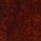

{kind=link}
{kind=link}
{kind=link}
{kind=link}
{kind=link}
上からEクラス(W212)、Cクラス(W204)、現行Cクラス(W205)、CLA(C117)


左上190E(W201)、右上初代Cクラス(W202)、左下2代目Cクラス(W203)、左下3代目Cクラス(W204)
 .
.


立てときました。メルセデス・ベンツＣクラスと関連車種用です。
'85-93
'93-01
'00-08
'07-16
'14-
.
'97-02
'02-09
'09-17
'17-
'97-04
'04-11
'11-
'08-15
'16-
'13-
| 年 | Code | Modell | 全長 | 全幅 | 全高 | 軸距 | 全重 | 回 | 駆 | Sus | CD | T/M | E/G | 形式 | head | 排気量 | PS | 最高速 | 0-100 | 補機 |
|---|---|---|---|---|---|---|---|---|---|---|---|---|---|---|---|---|---|---|---|---|
| '82 | W201 | 190E | 4,420 | 1,678 | 1,383 | 2,665 | 1,100 | 5.0 | FR | ms/ml | 0.33 | 4AT | M102 | R4 | SOHC 8v | 1,997 | 122 | 192 | 10.8 | Bosch K-Jetronic |
| '94 | W202 | C200 | 4,487 | 1,720 | 1,416 | 2,690 | 1,290 | 4.9 | FR | dw/ml | 0.30 | 4AT | M111 | R4 | DOHC 16v | 1,998 | 136 | 205 | 11.0 | Mehrpunkt FI |
| '00 | W203 | C200K | 4,526 | 1,728 | 1,426 | 2,715 | 1,415 | 5.0 | FR | 3l/ml | 0.26 | 5AT | M111 | R4 | DOHC 16v | 1,998 | 163 | 227 | 9.7 | Kompressor intercooler |
| '07 | W204 | C200K | 4,581 | 1,770 | 1,444 | 2,760 | 1,430 | 5.1 | FR | 3l/ml | 0.27 | 5AT | M271 | R4 | DOHC 16v VVT | 1,796 | 184 | 231 | 8.8 | Kompressor intercooler |
| '14 | W205 | C200 | 4,686 | 1,810 | 1,442 | 2,840 | 1,390 | 5.1 | FR | 4l/ml | 0.27 | 7AT | M274 | R4 | DOHC 16v CVVT | 1,991 | 184 | 233 | 7.2 | Direkt injektion Turbo |
| 年 | Code | Modell | 全長 | 全幅 | 全高 | 軸距 | 全重 | 回 | 駆 | Sus | CD | T/M | E/G | 形式 | head | 排気量 | PS | 最高速 | 0-100 | 補機 |
|---|---|---|---|---|---|---|---|---|---|---|---|---|---|---|---|---|---|---|---|---|
| '56 | W121 | 190 | 4,485 | 1,740 | 1,560 | 2,650 | 1,200 | FR | dw/sa | 0.50 | 4MT | M121 | R4 | SOHC 8v | 1,897 | 75 | 139 | 18.2 | Solex 32 PAITA | |
| '61 | W110 | 190c | 4,730 | 1,795 | 1,495 | 2,700 | 1,250 | FR | dw/sa | 0.50 | 4MT | M121 | R4 | SOHC 8v | 1,897 | 80 | 145 | 15.9 | Solex 34 PJCB | |
| '67 | W115 | 200 | 4,685 | 1,770 | 1,440 | 2,750 | 1,310 | 5.5 | FR | dw/st | 0.45 | 4AT | M115 | R4 | SOHC 8v | 1,988 | 95 | 155 | 15.9 | Stromberg 175 CDS |
| '76 | W123 | 200 | 4,725 | 1,786 | 1,438 | 2,795 | 1,340 | 5.6 | FR | dw/st | 0.43 | 4AT | M115 | R4 | SOHC 8v | 1,988 | 94 | 156 | 15.7 | Stromberg 175 CDT |
| '85 | W124 | 200E | 4,740 | 1,740 | 1,446 | 2,800 | 1,280 | 5.2 | FR | ms/ml | 0.29 | 4AT | M102 | R4 | SOHC 8v | 1,997 | 122 | 192 | 12.1 | Bosch KE-Jetronic |
| '95 | W210 | E200 | 4,795 | 1,799 | 1,436 | 2,833 | 1,365 | 5.2 | FR | dw/ml | 0.27 | 4AT | M111 | R4 | DOHC 16v | 1,998 | 136 | 207 | 11.5 | Mehrpunkt FI |
| '02 | W211 | E200K | 4,818 | 1,822 | 1,452 | 2,854 | 1,495 | 5.3 | FR | 4l/ml | 0.26 | 5AT | M271 | R4 | DOHC 16v | 1,796 | 163 | 222 | 9.6 | Mehrpunkt FI Kompressor |
| '09 | W212 | E200CGI | 4,868 | 1,854 | 1,464 | 2,874 | 1,560 | 5.3 | FR | 3l/ml | 0.26 | 5AT | M271 | R4 | DOHC 16v | 1,796 | 184 | 233 | 8.8 | Direkt injektion Turbo |
| '16 | W213 | E200 | 4,923 | 1,852 | 1,468 | 2,939 | 1,530 | 5.3 | FR | 4l/ml | 0.26 | 9AT | M274 | R4 | DOHC 16v CVVT | 1,991 | 184 | 232 | 7.4 | Direkt injektion Turbo |
| 年 | Code | Modell | 全長 | 全幅 | 全高 | 軸距 | 全重 | 回 | 駆 | Sus | CD | T/M | E/G | 形式 | 排気量 | PS | 最高速 | 0-100 | 補機 |
|---|---|---|---|---|---|---|---|---|---|---|---|---|---|---|---|---|---|---|---|
| '54 | W180 | 220a | 4,715 | 1,740 | 1,560 | 2,820 | 1,280 | FR | dw/sa | 0.5 | 4MT | M180 | R6 | 2,195 | 85 | 146 | 15.9 | ||
| '59 | W111 | 220SE | 4,875 | 1,795 | 1,500 | 2,750 | 1,375 | FR | dw/sa | 0.45 | semi-4AT | M127 | R6 | 2,195 | 120 | 155 | 13.2 | Injektion mechanisch | |
| '65 | W108 | 250SE | 4,900 | 1,810 | 1,440 | 2,750 | 1,480 | FR | dw/sa | 0.45 | 4AT | M108 | R6 | 2,496 | 150 | 181 | 11.9 | Injektion mechanisch | |
| '72 | W116 | 280SE | 4,960 | 1,870 | 1,425 | 2,865 | 1,610 | 5.7 | FR | dw/st | 0.40 | 4AT | M110 | R6 | 2,746 | 185 | 202 | 10.3 | Bosch D-Jetronic |
| '79 | W126 | 280SE | 4,995 | 1,820 | 1,430 | 2,935 | 1,560 | 5.7 | FR | dw/st | 0.37 | 4AT | M110 | R6 | 2,746 | 185 | 206 | 10.2 | Bosch K-Jetronic |
| '91 | W140 | 300SE | 5,113 | 1,886 | 1,492 | 3,040 | 1,890 | 5.7 | FR | dw/ml | 0.30 | 5AT | M104 | R6 | 3,199 | 231 | 228 | 9.1 | Bosch LH-Jetronic |
| '98 | W220 | S280 | 5,038 | 1,855 | 1,444 | 2,965 | 1,695 | 5.5 | FR | 4l/ml | 0.27 | 5AT | M112 | V6 | 2,799 | 204 | 228 | 9.5 | Bosch HFM |
| '05 | W221 | S350 | 5,076 | 1,871 | 1,473 | 3,035 | 1,805 | 5.8 | FR | 4l/ml | 0.27 | 7AT | M272 | V6 | 3,498 | 272 | 259(250) | 7.1 | Bosch HFM |
| '13 | W222 | S400h | 5,116 | 1,899 | 1,483 | 3,035 | 1,850 | 5.5 | FR | 4l/ml | 0.26 | 7AT | M276 | V6 | 3,498 | 333 | 276(250) | 6.3 | Elektromotor |
| 年 | Code | Modell | 全長 | 全幅 | 全高 | 軸距 | 全重 | 回 | 駆 | Sus | CD | T/M | E/G | 形式 | 排気量 | PS | 最高速 | 0-100 | 補機 |
|---|---|---|---|---|---|---|---|---|---|---|---|---|---|---|---|---|---|---|---|
| '97 | W168 | A160 | 3,575 | 1,719 | 1,601 | 2,423 | 1,020 | 5.4 | FF | ms/tq | 0.31 | 5AT | M166 | R4 | 1,598 | 102 | 180 | 11.7 | |
| '04 | W169 | A200 | 3,838 | 1,764 | 1,595 | 2,568 | 1,240 | 5.6 | FF | ms/tq | 0.31 | CVT | M266 | R4 | 2,034 | 136 | 189 | 10.2 | |
| '12 | W176 | A200 | 4,292 | 1,780 | 1,433 | 2,699 | 1,320 | 5.3 | FF | ms/sp | 0.28 | 7G-DCT | M270 | R4 | 1,595 | 156 | 223 | 8.0 | Turbo |
| '18 | W177 | A200 | 4,419 | 1,796 | 1,440 | 2,729 | 1,300 | 5.5 | FF | ms/ba | 0.27 | 7G-DCT | M282 | R4 | 1,332 | 163 | 225 | 8.0 | Turbo |
| 年 | Code | Modell | 全長 | 全幅 | 全高 | 軸距 | 全重 | 回 | 駆 | Sus | CD | T/M | E/G | 形式 | 排気量 | PS | 最高速 | 0-100 | 補機 |
|---|---|---|---|---|---|---|---|---|---|---|---|---|---|---|---|---|---|---|---|
| '13 | C117 | CLA200 | 4,630 | 1,777 | 1,438 | 2,699 | 1,355 | 5.1 | FF | ms/4l | 0.25 | 7G-DCT | M270 | R4 | 1,595 | 156 | 227 | 8.1 | Turbo |
| 年 | Code | Modell | 全長 | 全幅 | 全高 | 軸距 | 全重 | 回 | 駆 | Sus | CD | T/M | E/G | 形式 | 排気量 | PS | 最高速 | 0-100 | 補機 |
|---|---|---|---|---|---|---|---|---|---|---|---|---|---|---|---|---|---|---|---|
| '00 | CL203 | C200K Sportcpé | 4,343 | 1,728 | 1,406 | 2,715 | 1,405 | 5.0 | FR | ms/ml | 0.29 | 5AT | M111 | R4 | 1,998 | 163 | 219 | 9.1 | Kompressor |
| '08 | CL203 | CLC200K | 4,452 | 1,728 | 1,405 | 2,715 | 1,425 | 5.4 | FR | ms/ml | 0.29 | 5AT | M271 | R4 | 1,796 | 184 | 231 | 8.7 | Kompressor |
| '12 | C204 | C200 Cpé | 4,590 | 1,770 | 1,406 | 2,760 | 1,470 | 5.1 | FR | ms/ml | 0.27 | 7AT | M271 | R4 | 1,796 | 184 | 237 | 7.8 | Turbo |
| '16 | C205 | C200 Cpé | 4,686 | 1,810 | 1,405 | 2,840 | 1,450 | 5.2 | FR | 4l/ml | 0.29 | 9AT | M274 | R4 | 1,991 | 184 | 230 | 7.1 | Turbo |
| 年 | Code | Modell | 全長 | 全幅 | 全高 | 軸距 | 全重 | 回 | 駆 | Sus | CD | T/M | E/G | 形式 | 排気量 | PS | 最高速 | 0-100 | 補機 |
|---|---|---|---|---|---|---|---|---|---|---|---|---|---|---|---|---|---|---|---|
| '97 | C208 | CLK200 Cpé | 4,567 | 1,722 | 1,371 | 2,690 | 1,300 | 4.9 | FR | dw/ml | 0.30 | 5AT | M111 | R4 | 1,998 | 136 | 207 | 10.8 | |
| '02 | C209 | CLK200K Cpé | 4,638 | 1,740 | 1,413 | 2,715 | 1,465 | 5.0 | FR | 3l/ml | 0.28 | 5AT | M271 | R4 | 1,796 | 163 | 224 | 9.4 | Kompressor |
| 年 | Code | Modell | 全長 | 全幅 | 全高 | 軸距 | 全重 | 回 | 駆 | Sus | CD | T/M | E/G | 形式 | 排気量 | PS | 最高速 | 0-100 | 補機 |
|---|---|---|---|---|---|---|---|---|---|---|---|---|---|---|---|---|---|---|---|
| '68 | C114 | 250CE | 4,685 | 1,790 | 1,395 | 2,750 | 1,380 | FR | dw/st | 0.45 | 4AT | M114 | R6 | 2,496 | 170 | 181 | 11.3 | Bosch D-Jetronic | |
| '80 | C123 | 230CE | 4,640 | 1,786 | 1,395 | 2,710 | 1,390 | FR | dw/sｔ | 0.42 | 4AT | M102 | R4 | 2,299 | 136 | 180 | 11.6 | Bosch K-Jetronic | |
| '87 | C124 | 230CE | 4,655 | 1,740 | 1,410 | 2,715 | 1,340 | 5.1 | FR | ms/ml | 0.28 | 4AT | M102 | R4 | 2,299 | 136 | 201 | 11.0 | Bosch KE-Jetronic |
| '10 | C207 | E200 BE Cpé | 4,698 | 1,786 | 1,397 | 2,760 | 1,505 | 5.1 | FR | 3l/ml | 0.24 | 5AT | M271 | R4 | 1,796 | 184 | 240 | 8.3 | Turbo |
| '17 | C238 | E200 Cpé | 4,826 | 1,860 | 1,430 | 2,873 | 1,580 | 5.3 | FR | 4l/ml | 0.27 | 9AT | M274 | R4 | 1,991 | 184 | 231 | 7.6 | Turbo |
| 年 | Code | Modell | 全長 | 全幅 | 全高 | 軸距 | 全重 | 回 | 駆 | Sus | CD | T/M | E/G | 形式 | 排気量 | PS | 最高速 | 0-100 | 補機 |
|---|---|---|---|---|---|---|---|---|---|---|---|---|---|---|---|---|---|---|---|
| '04 | C219 | CLS350 | 4,913 | 1,873 | 1,403 | 2,854 | 1,655 | 5.3 | FR | 4l/ml | 0.30 | 7AT | M272 | V6 | 3,498 | 272 | 254 | 6.5 | |
| '11 | C218 | CLS350BE | 4,940 | 1,881 | 1,416 | 2,874 | 1,660 | 5.2 | FR | 3l/ml | 0.27 | 7AT | M276 | V6 | 3,498 | 306 | 276 | 5.7 | |
| '18 | C257 | CLS450 | 4,988 | 1,890 | 1,435 | 2,939 | 1,865 | 4mtc | 4l/ml | 0.26 | 9AT | M256 | R6 | 2,999 | 367 | 289 | 4.6 | 48V elektrisches System |
| 年 | Code | Modell | 全長 | 全幅 | 全高 | 軸距 | 全重 | 回 | 駆 | Sus | CD | T/M | E/G | 形式 | 排気量 | PS | 最高速 | 0-100 | 補機 |
|---|---|---|---|---|---|---|---|---|---|---|---|---|---|---|---|---|---|---|---|
| '52 | W188 | 300 S Cpé | 4,730 | 1,910 | 1,510 | 2,900 | 1,740 | FR | dw/sa | 0.52 | 4MT | M188 | R6 | 2,996 | 150 | 168 | 12.7 | 3carb | |
| '53 | W187 | 220 Cpé | 4,540 | 1,685 | 1,550 | 2,845 | 1,460 | FR | dw/sa | 0.60 | 4MT | M180 | R6 | 2,195 | 80 | 136 | 20.3 | ||
| '56 | W180 | 220 S Cpé | 4,700 | 1,790 | 1,530 | 2,700 | 1,350 | FR | dw/sa | 0.50 | 4MT | M180 | R6 | 2,195 | 100 | 151 | 14.5 | ||
| '58 | W128 | 220 SE Cpé | 4,700 | 1,790 | 1,530 | 2,700 | 1,385 | FR | dw/sa | 0.50 | semi4AT | M127 | R6 | 2,195 | 115 | 155 | 13.8 | Bosch injektion | |
| '61 | W111 | 220 SE Cpé | 4,880 | 1,845 | 1,445 | 2,750 | 1,410 | FR | dw/sa | 0.45 | 4AT | M127 | R6 | 2,195 | 120 | 158 | 13.7 | Bosch injektion | |
| '81 | C126 | 380 SEC | 4,910 | 1,828 | 1,406 | 2,850 | 1,585 | 5.5 | FR | dw/ml | 0.36 | 4AT | M116 | V8 | 3,839 | 204 | 212 | 8.6 | Bosch K-Jetronic |
| '92 | C140 | 500 SEC | 5,065 | 1,912 | 1,455 | 2,945 | 2,080 | 5.3 | FR | 4l/ml | 0.30 | 4AT | M119 | V8 | 4,973 | 320 | 262 | 7.3 | Bosch LH-Jetronic |
| '99 | C215 | CL500 | 4,993 | 1,857 | 1,398 | 2,885 | 1,790 | 5.3 | FR | 4l/ml | 0.28 | 5AT | M113 | V8 | 4,966 | 306 | 268 | 6.2 | Bosch HFM |
| '06 | C216 | CL500 | 5,065 | 1,871 | 1,418 | 2,955 | 1,920 | 5.4 | FR | 4l/ml | 0.26 | 7AT | M273 | V8 | 5,461 | 388 | 297 | 5.1 | Bosch ME 9 HFM |
| '15 | C217 | S500 Cpé | 5,027 | 1,899 | 1,411 | 2,945 | 1,955 | 5.4 | FR | 4l/ml | 0.27 | 9AT | M278 | V8 | 4,663 | 456 | 310 | 4.5 | Biturbo |
| 年 | Code | Modell | 全長 | 全幅 | 全高 | 軸距 | 全重 | 回 | 駆 | Sus | CD | T/M | E/G | 形式 | 排気量 | PS | 最高速 | 0-100 | 補機 |
|---|---|---|---|---|---|---|---|---|---|---|---|---|---|---|---|---|---|---|---|
| '54 | W198 | 300SL_Cpé | 4,520 | 1,790 | 1,300 | 2,400 | 1,295 | FR | dw/sa | 0.40 | 4MT | M198 | R6 | 2,996 | 215 | 211 | 7.4 | Direkt injektion | |
| '63 | W113 | 230SL_Cpé | 4,285 | 1,760 | 1,305 | 2,400 | 1,375 | FR | dw/sa | 0.42 | 4MT | M127 | R6 | 2,306 | 150 | 194 | 10.4 | Port injektion | |
| '71 | R107 | 350SL | 4,390 | 1,790 | 1,300 | 2,460 | 1,545 | FR | dw/st | 0.45 | 4MT | M116 | V8 | 3,499 | 200 | 211 | 8.1 | D-Jetronic | |
| '71 | C107 | 350SLC | 4,750 | 1,790 | 1,330 | 2,820 | 1,595 | FR | dw/st | 0.43 | 4MT | M116 | V8 | 3,499 | 200 | 212 | 8.3 | D-Jetronic | |
| '89 | R129 | 300SL-24 | 4,470 | 1,812 | 1,303 | 2,515 | 1,690 | 5.0 | FR | ms/ml | 0.34 | 5MT | M104 E30 | R6 | 2,962 | 231 | 240 | 7.9 | KE5-Jetronic |
| '02 | R230 | SL350 | 4,535 | 1,815 | 1,317 | 2,560 | 1,680 | 5.1 | FR | 4l/ml | 0.29 | 6MT | M112 E37 | V6 | 3,724 | 245 | 259 | 6.8 | Bosch HFM |
| '11 | R231 | SL350BE | 4,617 | 1,877 | 1,315 | 2,585 | 1,610 | 5.5 | FR | 4l/ml | 0.27 | 7AT | M276 DE35 | V6 | 3,498 | 306 | 280 | 5.5 | Direkt injektion |
| 年 | Code | Modell | 全長 | 全幅 | 全高 | 軸距 | 全重 | 回 | 駆 | Sus | CD | T/M | E/G | 形式 | 排気量 | PS | 最高速 | 0-100 | 補機 |
|---|---|---|---|---|---|---|---|---|---|---|---|---|---|---|---|---|---|---|---|
| '13 | X156 | GLA250 4mtc | 4,417 | 1,804 | 1,494 | 2,699 | 1,430 | 5.7 | 4WD | ms/ml | 0.32 | 7G-DCT | M270 | R4 | 1,991 | 211 | 231 | 6.1 | direkt injektion turbo |
| 年 | Code | Modell | 全長 | 全幅 | 全高 | 軸距 | 全重 | 回 | 駆 | Sus | CD | T/M | E/G | 形式 | 排気量 | PS | 最高速 | 0-100 | 補機 |
|---|---|---|---|---|---|---|---|---|---|---|---|---|---|---|---|---|---|---|---|
| '08 | X204 | GLK280 4mtc | 4,525 | 1,840 | 1,689 | 2,755 | 1,755 | 5.4 | 4WD | 3l/ml | 0.34 | 7AT | M272 | V6 | 2,996 | 231 | 215 | 7.8 | |
| '15 | X253 | GLC250 4mtc | 4,656 | 1,890 | 1,639 | 2,873 | 1,660 | 5.7 | 4WD | 4l/ml | 0.32 | 9AT | M270 | R4 | 1,991 | 211 | 218 | 7.1 | direkt injektion turbo |
| 年 | Code | Modell | 全長 | 全幅 | 全高 | 軸距 | 全重 | 回 | 駆 | Sus | CD | T/M | E/G | 形式 | 排気量 | PS | 最高速 | 0-100 | 補機 |
|---|---|---|---|---|---|---|---|---|---|---|---|---|---|---|---|---|---|---|---|
| '97 | W163 | ML320_4mtc | 4,587 | 1,833 | 1,776 | 2,820 | 1,915 | 6.0 | 4WD | dw/dw | 0.39 | 5AT | M112 | V6 | 3,199 | 218 | 201 | 10 | Bosch ME |
| '05 | W164 | ML350_4mtc | 4,788 | 1,911 | 1,815 | 2,915 | 2,120 | 5.5 | 4WD | dw/4l | 0.34 | 7AT | M272 | V6 | 3,498 | 272 | 222 | 8.1 | HFM |
| '11 | W166 | ML350_4mtc | 4,804 | 1,926 | 1,796 | 2,915 | 2,055 | 5.5 | 4WD | dw/4l | 0.35 | 7AT | M276 | V6 | 3,498 | 306 | 234 | 7.2 | direkt injektion |
| '15 | C292 | GLE400_Cpé | 4,900 | 2,003 | 1,720 | 2,915 | 2,105 | 5.9 | 4WD | dw/4l | 0.36 | 9AT | M276 | V6 | 2,996 | 333 | 237 | 5.8 | direkt injektion 2turbo |
| 年 | Code | Modell | 全長 | 全幅 | 全高 | 軸距 | 全重 | 回 | 駆 | Sus | CD | T/M | E/G | 形式 | head | 排気量 | PS | 最高速 | 0-100 | 補機 |
|---|---|---|---|---|---|---|---|---|---|---|---|---|---|---|---|---|---|---|---|---|
| '06 | W251 | R350_4mtc | 4,922 | 1,922 | 1,659 | 2,980 | 2,080 | 5.9 | 4WD | dw/4l | 0.31 | 7AT | M272 | 90゜V6 | DOHC | 3,498 | 272 | 234 | 8.1 | VVT |
| 年 | Code | Modell | 全長 | 全幅 | 全高 | 軸距 | 全重 | 回 | 駆 | Sus | CD | T/M | E/G | 形式 | head | 排気量 | PS | 最高速 | 0-100 | 補機 |
|---|---|---|---|---|---|---|---|---|---|---|---|---|---|---|---|---|---|---|---|---|
| '06 | X164 | GL320 CDI_4mtc | 5,088 | 1,920 | 1,840 | 3,075 | 2,375 | 5.7 | 4WD | dw/4l | 0.37 | 7AT | OM642 | 72゜V6 | DOHC 24v | 2,987 | 224 | 202 | 9.9 | turbo |
| '12 | X166 | GL350 BT_4mtc | 5,125 | 1,934 | 1,850 | 3,075 | 2,380 | 5.7 | 4WD | dw/4l | 0.35 | 7AT | OM642 | 72゜V6 | DOHC 24v | 2,987 | 258 | 214 | 8.6 | turbo |
OEM Puch ・ PeugeotP4
| 年式 | 全長 | 全幅 | 全高 | 軸距 | 全重 | 回 | Sus | CD | Code/Modell |
|---|---|---|---|---|---|---|---|---|---|
| '79 | 4,395 | 1,700 | 1,975 | 2,850 | 1,960 | pr/tq | 0.6 | W460/230G_LWB | |
| '90 | 4,635 | 1,690 | 1,940 | 2,850 | 2,195 | 6.5 | pr/tq | 0.54 | W463/230GE_LWB |
| 年式 | 全長 | 全幅 | 全高 | 軸距 | 全重 | 回 | Sus | CD | Code/Modell |
|---|---|---|---|---|---|---|---|---|---|
| '57 | 3,912 | 1,470 | 1,555 | 2,400 | 960 | dw/lr | T1/1.0 | ||
| '60 | 3,990 | 1,490 | 1,440 | 2,400 | 940 | dw/tcl | T2/1.0/1.5 | ||
| '64 | 4,110 | 1,550 | 1,420 | 2,420 | 945 | dw/tcl | T4,5/1.2-1.6 | ||
| '70 | 4,170 | 1,560 | 1,400 | 2,430 | 945 | .dw/ｌｒ | T8/1.5-2.0 | ||
| '73 | 4,250 | 1,610 | 1,390 | 2,500 | 1,090 | .dw/ｌｒ | T10,11,12/1.6-2.0 | ||
| '78 | 4,360 | 1,645 | 1,370 | 2,525 | 1,085 | .ms/lr | T13/2.0CX | ||
| '82 | 2,500 | ms/st | T14/1.5-2.0 | ||||||
| '83 | 1,670 | 1,365 | 2,515 | 1,005 | ms/st | T15/1.5-2.0 | |||
| '87 | 4,440 | 1,690 | 1,370 | 2,525 | 1,100 | 5.2 | ms/ms | T17/2.0EX | |
| '92 | 4,520 | 1,695 | 1,410 | 2,580 | 1,180 | 5.1 | ms/ms | T19/2.0EX | |
| '96 | 4,600 | 1,695 | 1,410 | 2,580 | 1,200 | 5.3 | ms/ms | T21/2.0G | |
| '01 | 4,595 | 1,695 | 1,470 | 2,700 | 1,240 | 5.3 | ms/ba | T24/2.0G | |
| '07 | 4,600 | 1,695 | 1,475 | 2,700 | 1,270 | 5.3 | ms/ba | T26/2.0G |
| 年式 | 全長 | 全幅 | 全高 | 軸距 | 全重 | 回 | Sus | CD | Code/Modell |
|---|---|---|---|---|---|---|---|---|---|
| '68 | 4,295 | 1,610 | 1,405 | 2,510 | 1,000 | dw/lr | T60/1.9Deluxe | ||
| '72 | 4,325 | 1,625 | 1,380 | 2,585 | 1,080 | dw/lr | X10/2.0GSL | ||
| '76 | 4,530 | 1,680 | 1,415 | 2,645 | 1,120 | ms/st | X30/2.0LGa | ||
| '80 | 4,640 | 1,690 | 1,425 | 2,645 | 1,225 | ms/st | X60/2.0Grande | ||
| '84 | 4,650 | 1,690 | 1,415 | 2,660 | 1,300 | ms/st | X70/2.0Grande | ||
| '88 | 4,690 | 1,695 | 1,405 | 2,680 | 1,290 | 5.0 | ms/dw | X81/2.0LG | |
| '92 | 4,750 | 1,750 | 1,390 | 2,730 | 1,280 | 5.1 | dw/dw | X90/2.0G | |
| '96 | 4,760 | 1,755 | 1,400 | 2,730 | 1,330 | 5.1 | dw/dw | X100/2.0G | |
| '00 | 4,735 | 1,760 | 1,460 | 2,780 | 1,380 | 5.3 | dw/dw | X110/2.0G | |
| '04 | 4,730 | 1,775 | 1,435 | 2,850 | 1,510 | 5.2 | dw/ml | 0.28 | X120/250G |
| '09 | 4,730 | 1,795 | 1,435 | 2,850 | 1,510 | 5.2 | dw/ml | 0.28 | X130/250G |
| 年式 | 全長 | 全幅 | 全高 | 軸距 | 全重 | 回 | Sus | CD | Code/Modell |
|---|---|---|---|---|---|---|---|---|---|
| '55 | 4,285 | 1,680 | 1,525 | 2,530 | 1,210 | dw/lr | RS/1.5 | ||
| '62 | 4,610 | 1,695 | 1,460 | 2,690 | 1,265 | dw/5l | S4/2.0Deluxe | ||
| '67 | 4,665 | 1,690 | 1,445 | 2,690 | 1,305 | dw/5l | S5/2.0SuperDeluxe | ||
| '71 | 4,680 | 1,690 | 1,420 | 2,690 | 1,360 | dw/4l | S6/2.6SuperSaloon | ||
| '74 | 4,765 | 1,690 | 1,440 | 2,690 | 1,470 | dw/4l | S8_S10/2.6RoyalSaloon | ||
| '79 | 4,860 | 1,715 | 1,410 | 2,690 | 1,500 | dw/4l | S11/2.6HT_RoyalSaloon | ||
| '83 | 4,860 | 1,720 | 1,420 | 2,720 | 1,495 | dw/st | S12/2.8Royal-G | ||
| '87 | 4,860 | 1,745 | 1,400 | 2,730 | 1,670 | dw/st | S13/3.0HT_Royal-G | ||
| '91 | 4,800 | 1,760 | 1,440 | 2,730 | 1,620 | dw/st | S14/3.0Royal-Touring | ||
| '95 | 4,820 | 1,760 | 1,425 | 2,780 | 1,490 | dw/dw | S15/3.0Royal-G | ||
| '99 | 4,820 | 1,765 | 1,455 | 2,780 | 1,550 | 5.2 | dw/dw | 0.29 | S171/2.5Asreet |
| '03 | 4,840 | 1,780 | 1,470 | 2,850 | 1,560 | 5.2 | dw/ml | 0.27 | S180/2.5Asreet |
| '08 | 4,870 | 1,795 | 1,470 | 2,850 | 1,610 | 5.2 | dw/ml | 0.27 | S200/2.5Asreet |
| '12 | 4,895 | 1,800 | 1,450 | 2,850 | 1,550 | 5.2 | dw/ml | S210/2.5Asreet | |
| '18 | 4,910 | 1,800 | 1,455 | 2,920 | 1,690 | 5.3 | ml/ml | S220/2.0B |
| 年式 | 全長 | 全幅 | 全高 | 軸距 | 全重 | 回 | Sus | CD | Code/Modell |
|---|---|---|---|---|---|---|---|---|---|
| '06 | 4,245 | 1,760 | 1,515 | 2,600 | 1,260 | 5.2 | ms/ba | 0.29 | E15/Auris1.8 |
| '07 | 4,410 | 1,695 | 1,460 | 2,600 | 1,190 | 5.1 | ms/ba | 0.29 | E140/Corolla1.8 |
| '98 | 4,510 | 1,700 | 1,435 | 2,780 | 1,530 | 5.1 | dw/dw | 0.30 | NC250/Progres |
| '03 | 4,630 | 1,760 | 1,480 | 2,700 | 1,370 | 5.6 | ms/dw | 0.28 | T250/Avensis2.0Xi |
| 年式 | 全長 | 全幅 | 全高 | 軸距 | 全重 | 回 | Sus | CD | Code/Modell |
|---|---|---|---|---|---|---|---|---|---|
| '69 | 3.885 | 1.465 | 1.345 | 2,250 | 895 | 4.8 | ms/.xl | 1300/99S | |
| '77 | 4,325 | 1,620 | 1,360 | 2,380 | 925 | 5.0 | ms/ms | SJ/1.6EX | |
| '81 | 4,410 | 1,650 | 1,355 | 2,450 | 940 | 5.1 | ms/ms | 0.32 | SZ/1.8EX |
| '85 | 4,535 | 1,695 | 1,355 | 2,600 | 1,120 | 5.2 | dw/dw | CA/2.0Si | |
| '89 | 4,680 | 1,695 | 1,390 | 2,720 | 1,230 | 5.5 | dw/dw | CB/2.0EXL | |
| '93 | 4,675 | 1,760 | 1,410 | 2,715 | 1,250 | 5.5 | dw/dw | CD/2.0EX | |
| '97 | 4.635 | 1,695 | 1,420 | 2,665 | 1,270 | 5.4 | dw/dw | 0.31 | CF/2.0VTS |
| '02 | 4,665 | 1,760 | 1,450 | 2,665 | 1,370 | 5.4 | dw/dw | 0.26 | CL/2.0E |
| '08 | 4,730 | 1,840 | 1,440 | 2,705 | 1,460 | 5.5 | dw/dw | CU/2.0TL | |
| '13 | 4,915 | 1,850 | 1,465 | 2,775 | 1,630 | 5.7 | ms/dw | CR/2.0hb_EX | |
| '17 | 4,893 | 1,862 | 1,449 | 2,830 | ms/ml | CV |
| 年式 | 全長 | 全幅 | 全高 | 軸距 | 全重 | 回 | Sus | CD | Code/Modell |
|---|---|---|---|---|---|---|---|---|---|
| '98 | 4,400 | 1,720 | 1,410 | 2,670 | 1,320 | 5.1 | dw/dw | 0.30 | XE10/2.0a |
| '05 | 4,575 | 1,795 | 1,430 | 2,730 | 1,570 | 5.1 | dw/ml | 0.28 | GSE2#/2.5 |
| '13 | 4,665 | 1,810 | 1,430 | 2,800 | 1,580 | 5.2 | dw/ml | 0.26 | XE30/250 |
| 年式 | 全長 | 全幅 | 全高 | 軸距 | 全重 | 回 | Sus | CD | Code/Modell |
|---|---|---|---|---|---|---|---|---|---|
| '09 | 4,700 | 1,785 | 1,505 | 2,700 | 1,640 | 5.6 | ms/dw | 0.27 | ANF10/HS250h |
| 年式 | 全長 | 全幅 | 全高 | 軸距 | 全重 | 回 | Sus | CD | Code/Modell |
|---|---|---|---|---|---|---|---|---|---|
| '57 | 4,280 | 1,675 | 1,535 | 2,535 | 1,310 | dw/dd | ALSI-1/1.5 | ||
| '63 | 4,255 | 1,495 | 1,410 | 2,590 | 1,070 | dw/lr | S54B2/2.0GT-B | ||
| '68 | 4,430 | 1,595 | 1,405 | 2,640 | 1,095 | ms/st | C10/2.0GT | ||
| '72 | 4,460 | 1,625 | 1,395 | 2,610 | 1,125 | ms/st | C110/2.0GT | ||
| '77 | 4,600 | 1,625 | 1,390 | 2,615 | 1,190 | ms/st | C210/2.0GT-L | ||
| '81 | 4,620 | 1,675 | 1,385 | 2,615 | 1,210 | ms/st | R30/2.0t_GT-EX | ||
| '85 | 4,590 | 1,690 | 1,385 | 2,615 | 1,380 | ms/st | R31/2.02.0Excel | ||
| '89 | 4,580 | 1,695 | 1,340 | 2,615 | 1,200 | 5.2 | ml /ml | R32/2.0GTE | |
| '93 | 4,720 | 1,720 | 1,360 | 2,720 | 1,280 | 5.2 | ml /ml | R33/2.0GTS | |
| '98 | 4,705 | 1,720 | 1,375 | 2,665 | 1,360 | 5.1 | ml /ml | 0.33 | R34/2.0GT |
| '01 | 4,750 | 1,750 | 1,470 | 2,850 | 1,480 | 5.5 | ml /ml | 0.27 | V35/2.5GT |
| '06 | 4,780 | 1,770 | 1,450 | 2,850 | 1,580 | 5.4 | dw/ml | 0.29 | V36/2.5GT |
| '14 | 4,790 | 1,820 | 1,450 | 2,850 | 1,580 | 5.7 | dw/ml | 0.26 | V37/2.0GT-t |
| 年式 | 全長 | 全幅 | 全高 | 軸距 | 全重 | 回 | Sus | CD | Code/Modell |
|---|---|---|---|---|---|---|---|---|---|
| '66 | 3,925 | 1,480 | 1,390 | 2,400 | 695 | 4.8 | dw/ta | A522/1000 | |
| '69 | 3,900 | 1,480 | 1,390 | 2,420 | 705 | 4.8 | dw/ta | ff-1 | |
| '70 | 3,900 | 1,480 | 1,375 | 2,420 | 730 | 4.8 | dw/st | ff-1_1300G |
| 年式 | 全長 | 全幅 | 全高 | 軸距 | 全重 | 回 | Sus | CD | Code/Modell |
|---|---|---|---|---|---|---|---|---|---|
| '71 | 3,995 | 1,500 | 1,385 | 2,455 | 780 | 4.8 | dw/st | A22/1400GL | |
| '79 | 4,270 | 1,615 | 1,365 | 2,460 | 935 | 4.8 | dw/st | AB/1800GTS | |
| '84 | 4,370 | 1,660 | 1,425 | 2,465 | 1,000 | 4.8 | dw/st | AA4/1800GR |
| 年式 | 全長 | 全幅 | 全高 | 軸距 | 全重 | 回 | Sus | CD | Code/Modell |
|---|---|---|---|---|---|---|---|---|---|
| '92 | 4,340 | 1,690 | 1,415 | 2,520 | 1,170 | 5.1 | ms/ms | GC6/ＨＸ1.8 | |
| '00 | 4,405 | 1,730 | 1,440 | 2,525 | 1,310 | 5.4 | ms/ms | GD9/WRX2.0NA | |
| '08 | 4,580 | 1,740 | 1,475 | 2,620 | 1,340 | 5.3 | ms/dw | GE7/ANESIS2.0 | |
| '11 | 4,580 | 1,740 | 1,465 | 2,645 | 1,340 | 5.3 | ms/dw | 0.306 | GJ7/2.0i |
| '16 | 4,625 | 1,775 | 1,455 | 2,670 | 1,370 | 5.3 | ms/dw | GK7/2.0i-L |
| 年式 | 全長 | 全幅 | 全高 | 軸距 | 全重 | 回 | Sus | CD | Code/Modell |
|---|---|---|---|---|---|---|---|---|---|
| '89 | 4,510 | 1,690 | 1,395 | 2,580 | 1,290 | 5.1 | ms/ms | BC5/VZ2.0 | |
| '93 | 4,595 | 1,695 | 1,405 | 2,630 | 1,280 | 5.3 | ms/ms | BD5/TS2.0 | |
| '98 | 4,605 | 1,695 | 1,410 | 2,650 | 1,390 | 5.3 | ms/ml | BE5/B4_RS2.0 | |
| '03 | 4,635 | 1,730 | 1,425 | 2,670 | 1,360 | 5.4 | ms/ml | 0.28 | BL5/B4_2.0R |
| '09 | 4,730 | 1,780 | 1,505 | 2,750 | 1,480 | 5.5 | ms/dw | BM9/B4_2.5GT | |
| '14 | 4,795 | 1,840 | 1,500 | 2,750 | 1,530 | 5.5 | ms/dw | BN9/B4_2.5 |
| 年式 | 全長 | 全幅 | 全高 | 軸距 | 全重 | 回 | Sus | CD | Code/Modell |
|---|---|---|---|---|---|---|---|---|---|
| '70 | 4,150 | 1,580 | 1,420 | 2,470 | 965 | ms/lr | S122A/12A | ||
| '74 | 4,260 | 1,580 | 1,420 | 2,470 | 1,005 | ms/4l | CB12S/12B | ||
| '78 | 4,415 | 1,660 | 1,380 | 2,510 | 1,005 | 4.8 | ms/4l | CB/GL1.8 | |
| '82 | 4,515 | 1,690 | 1,410 | 2,510 | 1,050 | 5.0 | ms/ms | GC/SG-X1.8 | |
| '87 | 4,515 | 1,690 | 1,410 | 2,575 | 1,230 | 5.3 | ms/ms | GD/CELEBLE2.0 | |
| '91 | 4,695 | 1,770 | 1,400 | 2,610 | 1,220 | 5.3 | ms/ms | GE/Cronos2.0VS | |
| '94 | 4,595 | 1,695 | 1,395 | 2,610 | 1,170 | 5.2 | ms/ms | CG/Zｉ_2.0 | |
| '97 | 4,575 | 1,695 | 1,440 | 2,610 | 1,240 | 5.2 | ms/ms | GF/Zｉ-R2.0 |
| 年式 | 全長 | 全幅 | 全高 | 軸距 | 全重 | 回 | Sus | CD | Code/Modell |
|---|---|---|---|---|---|---|---|---|---|
| '02 | 4,670 | 1,780 | 1,430 | 2,675 | 1,300 | 5.4 | dw/ml | 0.30 | GG/20F |
| '08 | 4,735 | 1,795 | 1,450 | 2,725 | 1,500 | 5.4 | dw/ml | 0.27 | GH/20C |
| '12 | 4,860 | 1,840 | 1,450 | 2,830 | 1,430 | 5.6 | ms/ml | 0.26 | GJ/20S |
| 年式 | 全長 | 全幅 | 全高 | 軸距 | 全重 | 回 | Sus | CD | Code/Modell |
|---|---|---|---|---|---|---|---|---|---|
| '65 | 4,079 | 1,539 | 1,500 | 2,400 | 800 | ta/sa | 0.48 | Typ1/1300A | |
| '74 | 3,815 | 1,610 | 1,411 | 2,400 | 830 | ms/ta | 0.42 | A1_17/1.5Sa | |
| '83 | 3,985 | 1,665 | 1,415 | 2,475 | 880 | ms/ba | 0.34 | A2_19E_1G/1.8GL | |
| '91 | 4,020 | 1,690 | 1,425 | 2,475 | 1,005 | ms/ba | 0.30 | A3_1H/1.8CL | |
| '97 | 4,149 | 1,735 | 1,439 | 2,511 | 1,175 | ms/4l | 0.31 | A4_1J/2.0A | |
| '03 | 4,204 | 1,759 | 1,485 | 2,578 | 1,290 | ms/4l | 0.32 | A5_1K/1.4TSI_CL | |
| '09 | 4,210 | 1,790 | 1,485 | 2,575 | 1,340 | 5.0 | ms/4l | 0.32 | A6_5K/1.4TSI_HL |
| '12 | 4,265 | 1,800 | 1,460 | 2,635 | 1,320 | 5.2 | ms/4l | 0.27 | A7_5G/1.4TSI_HL |
| 年式 | 全長 | 全幅 | 全高 | 軸距 | 全重 | 回 | Sus | CD | Code/Modell |
|---|---|---|---|---|---|---|---|---|---|
| '68 | 4,555 | 1,675 | 1,475 | 2,500 | 1,080 | ms/st | 411/Typ4 | ||
| '70 | 4,455 | 1,665 | 1,455 | 2,690 | 1,100 | ms/st | K70 | (NSU) | |
| '73 | 4,180 | 1,600 | 1,370 | 2,470 | 900 | ms/ta | 0.40 | B1_32/1.5S | |
| '81 | 4,545 | 1,695 | 1,395 | 2,550 | 1,150 | 5.2 | ms/ta | 0.40 | B2/Santana1.9Xi5 |
| '81 | 4,425 | 1,710 | 1,385 | 2,550 | 985 | ms/ta | 0.38 | B2_32B/1.8GL | |
| '88 | 4,573 | 1,704 | 1,428 | 2,620 | 1,100 | 5.0 | ms/ta | 0.30 | B3_35i/1.6CL |
| '93 | 4,590 | 1,705 | 1,420 | 2,625 | 1,290 | 5.0 | ms/ta | B4_35i/1.8CL | |
| '97 | 4,680 | 1,740 | 1,460 | 2,705 | 1,360 | 5.4 | 4l/ta | 0.27 | B5_3B/1.8 |
| '01 | 4,703 | 1,746 | 1,462 | 2,703 | 1,365 | 5.4 | 4l/ta | B5.5_3BG/2.0 | |
| '06 | 4,765 | 1,820 | 1,472 | 2,709 | 1,439 | 5.3 | ms/4l | 0.26 | B6_3C/1.8TSI |
| '08 | 4,799 | 1,855 | 1,417 | 2,711 | 1,430 | 5.3 | ms/4l | 0.30 | B6_3C/CC1.8TSI |
| '10 | 4,785 | 1,820 | 1,490 | 2,710 | 1,430 | 5.3 | ms/4l | 0.29 | B7_3C/1.4T |
| '14 | 4,767 | 1,832 | 1,456 | 2,791 | 1,367 | 5.4 | ms/4l | 0.28 | B8_3G/1.4TSI |
| 年式 | 全長 | 全幅 | 全高 | 軸距 | 全重 | 回 | Sus | CD | Code/Modell |
|---|---|---|---|---|---|---|---|---|---|
| '13 | 4,465 | 1,795 | 1,405 | 2,637 | 1,330 | 5.1 | ms/ml | 0.29 | 8V/1.4_TFSI |
| 年式 | 全長 | 全幅 | 全高 | 軸距 | 全重 | 回 | Sus | CD | Code/Modell |
|---|---|---|---|---|---|---|---|---|---|
| '50 | 4,200 | 1,600 | 1,450 | 2,350 | 790 | 5.52 | dw/lr | 0.45 | F89DKW0.7 |
| '55 | 4,325 | 1,695 | 1,490 | 2,450 | 940 | 5.25 | dw/lr | 0.45 | F93_3=6DKW0.9 |
| '58 | 4,325 | 1,695 | 1,488 | 2,450 | 940 | 5.51 | dw/lr | 0.45 | AutoUnion1000 |
| '63 | 4,280 | 1,618 | 1,449 | 2,490 | 945 | 5.45 | dw/ta | 0.50 | F102_DKW1.2 |
| '65 | 4,380 | 1,625 | 1,450 | 2,490 | 980 | ms/ta | 0.48 | F103/80(B1)1.7L | |
| '78 | 4,383 | 1,682 | 1,365 | 2,540 | 955 | ms/ta | 0.40 | 81/80(B2)1.6LS | |
| '86 | 4,478 | 1,695 | 1,397 | 2,546 | 1,165 | 5.3 | ms/ta | 0.30 | 89/80(B3)2.0 |
| '91 | 4,482 | 1,695 | 1,406 | 2,612 | 1,230 | 5.4 | ms/ta | 0.30 | 8C/80(B4)2.0E |
| '94 | 4,479 | 1,733 | 1,415 | 2,617 | 1,240 | 5.2 | ml./ta | 0.31 | 8D/A4(B5)1.8_20v |
| '00 | 4,548 | 1,772 | 1,428 | 2,650 | 1,345 | 5.2 | ml./dw | 0.28 | 8E/A4(B6)2.0 |
| '04 | 4,586 | 1,772 | 1,427 | 2,642 | 1,390 | 5.2 | ml./dw | 0.28 | 8E/A4(B7)2.0 |
| '07 | 4,703 | 1,826 | 1,427 | 2,808 | 1,410 | 5.5 | ml./dw | 0.27 | 8K/A4(B8)1.8TFSI |
| '15 | 4,726 | 1,842 | 1,427 | 2,820 | 1,405 | 5.5 | ml./ml | 0.23 | 8W/A4(B9)2.0TFSI |
| 年式 | 全長 | 全幅 | 全高 | 軸距 | 全重 | 回 | Sus | CD | Code/Modell |
|---|---|---|---|---|---|---|---|---|---|
| '68 | 4,638 | 1,729 | 1,421 | 2,675 | 1,100 | dw/pr | 0.42 | F104/100(C1)1.9LS | |
| '76 | 4,680 | 1,768 | 1,390 | 2,680 | 1,150 | ms/ta | 0.42 | 43/100(C2)2.0LS | |
| '82 | 4,793 | 1,814 | 1,422 | 2,687 | 1,210 | 5.6 | ms/ta | 0.32 | 44/100(C3)2.1E_CD |
| '90 | 4,790 | 1,777 | 1,431 | 2,687 | 1,325 | 5.3 | ms/ta | 0.32 | 4A/100(C4)2.0E |
| '94 | 4,797 | 1,783 | 1,430 | 2,687 | 1,370 | 5.3 | ms/ta | 0.32 | 4A/A6(C4)2.0 |
| '97 | 4,796 | 1,810 | 1,453 | 2,760 | 1,480 | 5.4 | ml./ta | 0.28 | 4B/A6(C5)2.4 |
| '04 | 4,916 | 1,855 | 1,459 | 2,843 | 1,555 | 5.7 | ml./dw | 0.28 | 4F/A6(C6)2.4 |
| '11 | 4,915 | 1,874 | 1,455 | 2,912 | 1,565 | 5.7 | ml./dw | 0.28 | 4G/A6(C7)2.0TFSI |
| '18 | 4,939 | 1,886 | 1,457 | 2,924 | 1,640 | 6.05 | dw/dw | 0.26 | A6(C8)45TFSI |
| 年式 | 全長 | 全幅 | 全高 | 軸距 | 全重 | 回 | Sus | CD | Code/Modell |
|---|---|---|---|---|---|---|---|---|---|
| '66 | 4,230 | 1,590 | 1,410 | 2,500 | 950 | ms/st | 0.45 | 2002A | |
| '75 | 4,355 | 1,610 | 1,380 | 2,563 | 1,070 | ms/st | 0.47 | E21/320iA | |
| '83 | 4,325 | 1,645 | 1,380 | 2,570 | 1,080 | 5.3 | ms/st | 0.38 | E30/320iA |
| '90 | 4,435 | 1,695 | 1,395 | 2,700 | 1,305 | 5.0 | ms/ca | 0.32 | E36/320ia |
| '98 | 4,470 | 1,740 | 1,415 | 2,725 | 1,400 | 4.9 | ms/ca | 0.31 | E46/320i |
| '05 | 4,525 | 1,815 | 1,425 | 2,760 | 1,350 | 5.3 | ms/ ia | 0.26 | E90/320i |
| '12 | 4,625 | 1,800 | 1,440 | 2,810 | 1,420 | 5.4 | ms/ ia | 0.29 | F30/320i |
| '19 | 4,709 | 1,827 | 1,435 | 2,851 | 1,560 | 5.7 | ms/ 5l | 0.23 | G20/320i |
| 年式 | 全長 | 全幅 | 全高 | 軸距 | 全重 | 回 | Sus | CD | Code/Modell |
|---|---|---|---|---|---|---|---|---|---|
| '62 | 4,500 | 1,710 | 1,445 | 2,550 | 1,141 | ms/st | 0.45 | 2000a | |
| '72 | 4,620 | 1,690 | 1,425 | 2,636 | 1,260 | ms/st | 0.43 | E12/520iA | |
| '82 | 4,620 | 1,690 | 1,415 | 2,628 | 1,230 | 5.5 | ms/st | 0.39 | E28/520iA |
| '88 | 4,720 | 1,750 | 1,415 | 2,765 | 1,420 | 5.5 | ms/st | 0.30 | E34/525i |
| '96 | 4,775 | 1,800 | 1,435 | 2,830 | 1,445 | 5.3 | ms./ia | 0.27 | E39/525i |
| '03 | 4,855 | 1,845 | 1,470 | 2,890 | 1,485 | 5.7 | ms./ia | 0.26 | E60/525i |
| '10 | 4,899 | 1,860 | 1,464 | 2,968 | 1,650 | 6.0 | dw/ia | 0.28 | F10/523i |
| '17 | 4,936 | 1,868 | 1,479 | 2,975 | 1,540 | dw/5l | 0.22 | G30/523i |
| 年式 | 全長 | 全幅 | 全高 | 軸距 | 全重 | 回 | Sus | CD | Code/Modell |
|---|---|---|---|---|---|---|---|---|---|
| '55 | 4,033 | 1,550 | 1,406 | 2,380 | 915 | 5.0 | dw/ta | 0.5 | 750C/Giulietta |
| '62 | 4,140 | 1,560 | 1,430 | 2,510 | 1,060 | 5.45 | dw/ta | 0.42 | 105/Giulia1600TI |
| '77 | 4,210 | 1,650 | 1,400 | 2,510 | 1,100 | 5.05 | dw/ta | 0.42 | 116/Giulietta_2.0 |
| '85 | 4,330 | 1,630 | 1,400 | 2,510 | 1,070 | 5.45 | dw/dd | 0.36 | 162B/75_2.0_Twin Spark |
| '94 | 4,257 | 1,712 | 1,425 | 2,540 | 1,215 | 5.2 | ms/ta | 0.31 | 930/146_1.8_Twin Spark_16V |
| '00 | 4,223 | 1,729 | 1,442 | 2,546 | 1,250 | 5.75 | dw/ms | 0.32 | 937/147_2.0_Twin Spark_16V |
| '09 | 4,351 | 1,798 | 1,465 | 2,634 | 1,310 | 5.45 | ms/ml | 0.31 | 940/Giulietta1.4TB16V |
| 年式 | 全長 | 全幅 | 全高 | 軸距 | 全重 | 回 | Sus | CD | Code/Modell |
|---|---|---|---|---|---|---|---|---|---|
| '68 | 4,390 | 1,565 | 1,430 | 2,570 | 1,110 | 5.2 | dw/ta | 0.45 | 105-115/1750 |
| '72 | 4,385 | 1,640 | 1,430 | 2,510 | 1,140 | 5.05 | dw/dd | 0.44 | 116/Alfetta_2.0 |
| '84 | 4,391 | 1,638 | 1,420 | 2,510 | 1,090 | 5.7 | dw/dd | 0.37 | 162A/90_2.0 |
| '92 | 4,443 | 1,700 | 1,445 | 2,540 | 1,250 | 5.25 | ms/ta | 0.29 | 167/155_2.0TS |
| '97 | 4,430 | 1,745 | 1,415 | 2,595 | 1,250 | 5.55 | dw/ms | 0.31 | 932/156_2.0JTS |
| '05 | 4,660 | 1,830 | 1,422 | 2,703 | 1,490 | 5.55 | dw/ml | 0.33 | 939/159_2.2JTS |
| '16 | 4,639 | 1,873 | 1,426 | 2,820 | dw/ml | 952/Giulia |
| 年式 | 全長 | 全幅 | 全高 | 軸距 | 全重 | 回 | Sus | CD | Code/Modell |
|---|---|---|---|---|---|---|---|---|---|
| '58 | 4,715 | 1,700 | 1,430 | 2,720 | 1,340 | 5.2 | dw/ta | 0.55 | 102-2000 |
| '62 | 4,700 | 1,700 | 1,400 | 2,720 | 1,420 | 5.5 | dw/ta | 0.48 | 106-2600 |
| '79 | 4,679 | 1,685 | 1,395 | 2,600 | 1,430 | 5.6 | dw/dd | 0.43 | 119/Alfa-6_2.5 |
| '87 | 4,555 | 1,760 | 1,400 | 2,660 | 1,200 | 5.4 | ms/ms | 0.30 | 164_2.0TS |
| '98 | 4,720 | 1,815 | 1,406 | 2,720 | 1,419 | 5.8 | dw/ml | 0.31 | 936/166_2.0TS16V |
| 年式 | 全長 | 全幅 | 全高 | 軸距 | 全重 | 回 | Sus | CD | Code/Modell |
|---|---|---|---|---|---|---|---|---|---|
| '81 | 4,392 | 1,694 | 1,320 | 2,570 | 1,175 | 5.4 | ms/ba | 0.40 | Cimarron1.8 |
| '06 | 4,680 | 1,750 | 1,470 | 2,675 | 1,585 | 5.4 | dw/ml | 0.306 | BLS2.0T |
| '13 | 4,680 | 1,805 | 1,415 | 2,775 | 1,580 | 5.55 | ms/ml | 0.30 | ATS2.0T |
| 年式 | 全長 | 全幅 | 全高 | 軸距 | 全重 | 回 | Sus | CD | Code/Modell |
|---|---|---|---|---|---|---|---|---|---|
| '97 | 4,928 | 1,786 | 1,430 | 2,730 | 1,710 | 5.1 | ms/ml | 0.33 | Catera |
| '03 | 4,850 | 1,795 | 1,460 | 2,880 | 1,640 | 5.3 | dw/ml | 0.31 | CTSⅠ2.6 |
| '08 | 4,870 | 1,850 | 1,470 | 2,880 | 1,760 | 5.2 | dw/ml | 0.33 | CTSⅡ2.8 |
| '14 | 4,966 | 1,834 | 1,453 | 2,911 | 1,680 | 5.52 | ms/ml | 0.32 | CTSⅢ2.0T |
| 年式 | 全長 | 全幅 | 全高 | 軸距 | 全重 | 回 | Sus | CD | Code/Modell |
|---|---|---|---|---|---|---|---|---|---|
| '47 | 4,216 | 1,574 | 1,346 | 2,600 | 961.6 | dw/lr | 444/PV | ||
| '56 | 4,394 | 1,620 | 1,505 | 2,591 | 1,100 | dw/ta | 120/Amazon | ||
| '67 | 4,640 | 1,730 | 1,440 | 2,700 | 1,170 | dw/ta | 0.50 | 144GL1.8 | |
| '76 | 4,897 | 1,707 | 1,435 | 2,640 | 1,250 | 5.0 | ms/5l | 0.45 | 244L2.0 |
| '85 | 4,785 | 1,750 | 1,410 | 2,770 | 1,250 | 4.95 | ms/5l | 0.40 | 740GL2.3 |
| '92 | 4,660 | 1,760 | 1,415 | 2,665 | 1,440 | 5.2 | ms/dl | 0.30 | 850(S70)2.4 |
| '00 | 4,575 | 1,815 | 1,430 | 2,715 | 1,490 | 5.3 | ms/ml | 0.28 | S60_2.4 |
| '10 | 4,630 | 1,845 | 1,480 | 2,775 | 1,540 | ms/ml | 0.28 | S60_1.6t |
| 年式 | 全長 | 全幅 | 全高 | 軸距 | 全重 | 回 | Sus | CD | Code/Modell |
|---|---|---|---|---|---|---|---|---|---|
| '69 | 4,715 | 1,735 | 1,440 | 2,700 | 1,345 | 4.8 | dw/ta | 0.50 | 164_3.0 |
| '74 | 4,897 | 1,707 | 1,435 | 2,640 | 1,395 | 4.8 | ms/ta | 0.50 | 264GL2.7 |
| '82 | 4,805 | 1,750 | 1,410 | 2,770 | 1,325 | 5.0 | ms/ml | 0.40 | 760GLE2.8 |
| '90 | 4,869 | 1,748 | 1,410 | 2,769 | 1,524 | 5.0 | ms/ml | 0.36 | 960(S90)2.8 |
| '98 | 4,822 | 1,832 | 1,434 | 2,791 | 1,653 | 5.8 | ms/ml | 0.28 | S80I_2.9 |
| '06 | 4,850 | 1,860 | 1,488 | 2,836 | 1,581 | 6.0 | ms/ml | 0.29 | S80II_3.2 |
| '16 | 4,963 | 1,879 | 1,443 | 2,941 | 1,801 | S90 |
| 年式 | 全長 | 全幅 | 全高 | 軸距 | 全重 | 回 | Sus | CD | Code/Modell |
|---|---|---|---|---|---|---|---|---|---|
| '55 | 4,470 | 1,670 | 1,510 | 2,660 | 1,095 | 4.7 | dw/tq | 403_1.5 | |
| '60 | 4,450 | 1,620 | 1,450 | 2,650 | 1,070 | 5.4 | ms/pr | 404_1.6 | |
| '87 | 4,410 | 1,720 | 1,405 | 2,670 | 1,150 | 5.2 | ms/ta | 0.31 | 405SRI1.9 |
| '95 | 4,555 | 1,770 | 1,420 | 2,700 | 1,440 | 5.7 | ms/ml | 0.30 | 406SV2.0 |
| '04 | 4,685 | 1,840 | 1,460 | 2,725 | 1,550 | 5.8 | dw/ml | 0.29 | 407SV2.2 |
| 年式 | 全長 | 全幅 | 全高 | 軸距 | 全重 | 回 | Sus | CD | Code/Modell |
|---|---|---|---|---|---|---|---|---|---|
| '68 | 4,486 | 1,690 | 1,460 | 2,740 | 1,200 | 5.45 | ms/st | 504GL1.9 | |
| '79 | 4,580 | 1,720 | 1,450 | 2,740 | 1,200 | 5.55 | ms/st | 0,44 | 505GR2.0 |
| '11 | 4,790 | 1,855 | 1,455 | 2,815 | 1,520 | 5.9 | ms/ml | 0.26 | 508_1.6turbo |
| 年式 | 全長 | 全幅 | 全高 | 軸距 | 全重 | 回 | Sus | CD | Code/Modell |
|---|---|---|---|---|---|---|---|---|---|
| '75 | 4,720 | 1,770 | 1,435 | 2,800 | 1,415 | 5.75 | ms/st | 0.4 | 604_2.7 |
| '89 | 4,723 | 1,799 | 1,422 | 2,800 | 1,295 | 6.0 | ms/ta | 0.28 | 605SL2.0 |
| '99 | 4,902 | 1,835 | 1,442 | 2,800 | 1,610 | ms/dw | 607_2.2 |
| 年式 | 全長 | 全幅 | 全高 | 軸距 | 全重 | 回 | Sus | CD | Code/Modell |
|---|---|---|---|---|---|---|---|---|---|
| '70 | 4,120 | 1,608 | 1,350 | 2,550 | 880 | dw/ta | 0.36 | GS1.0 | |
| '82 | 4,235 | 1,680 | 1,365 | 2,655 | 1,070 | 5.5 | ms/ta | 0.33 | BX1.9_19TRｉ |
| '93 | 4,445 | 1,755 | 1,385 | 2,740 | 1,330 | 5.5 | ms/ta | 0.32 | Xantia2.0SX |
| '01 | 4,740 | 1,780 | 1,480 | 2,750 | 1,430 | ms/ta | 0.29 | C5Ⅰ_2.0LE | |
| '07 | 4,795 | 1,860 | 1,470 | 2,815 | 1,600 | 6.2 | dw/ml | 0.29 | C5Ⅱ_2.0i16v |
| 年式 | 全長 | 全幅 | 全高 | 軸距 | 全重 | 回 | Sus | CD | Code/Modell |
|---|---|---|---|---|---|---|---|---|---|
| '55 | 4,800 | 1,790 | 1,445 | 3,125 | 1,170 | dw/ta | 0.38 | DS19_1,9 | |
| '74 | 4,660 | 1,760 | 1,360 | 2,845 | 1,265 | dw/ta | 0.40 | CX_2.0 | |
| '89 | 4,709 | 1,793 | 1,389 | 2,850 | 1,280 | ms/ta | 0.30 | XM_2.0 | |
| '05 | 4,908 | 1,860 | 1,464 | 2,900 | 1,816 | dw/ml | 0.31 | C6_2.7 |
| 年式 | 全長 | 全幅 | 全高 | 軸距 | 全重 | 回 | Sus | CD | Code/Modell |
|---|---|---|---|---|---|---|---|---|---|
| '01 | 4,672 | 1,789 | 1,392 | 2,710 | 1,450 | 5.3 | ms/ml | 0.32 | X-Type_2.0V6 |
| '15 | 4,672 | 1,850 | 1,416 | 2,835 | 1,474 | 5.5 | dw/ml | 0.26 | XE2.0 |
| 年式 | 全長 | 全幅 | 全高 | 軸距 | 全重 | 回 | Sus | CD | Code/Modell |
|---|---|---|---|---|---|---|---|---|---|
| '99 | 4,859 | 1,819 | 1,415 | 2,908 | 1637 | 5.7 | dw/dw | 0.32 | S-Type_3.0 |
| '07 | 4,961 | 1,877 | 1,460 | 2,910 | 1,750 | 5.5 | dw/ml | 0.29 | X250/XFⅠ3.0 |
| '15 | 4,965 | 1,880 | 1,455 | 2,960 | 1,830 | 5.7 | dw/ia | 0.26 | X260/XFⅡ3.0 |
上からEクラス(W212)、Cクラス(W204)、現行Cクラス(W205)、CLA(C117)
左上190E(W201)、右上初代Cクラス(W202)、左下2代目Cクラス(W203)、左下3代目Cクラス(W204)
.
Mercedes車全般のパネルです。 出典 ： www.mecdesign.de
 |
||||||||
| Laurel | Calyptus linea | Wurzelnuss | Calyptus linea | Wurzelnuss | Esche_hell | Wurzelnuss | Rosenrot | Kastanie |
| Esche dunkel | Vavona | Natural Wurzel | Carbon | Wurzelnuss matt | Laurel glanz | Ulme hell | Ulme dunkel | Vogelaugenahorn |
| Eukalyptus | Wurzelnuss | Wurzelnuss | Wurzelnuss matt | Calyptus | Wurzelnuss | Esche | Zebrano rot | Zebrano hell |
|  |  |
|||||||
| Wurzel rot | American dunkel | Plantane klar | Plantane dunkel | Piano black | Alu silber grau |
キャブレター = Solex
| Code | cm³ | B×H | 圧縮 | 補機 | ps/rpm | kg/rpm | modell |
|---|---|---|---|---|---|---|---|
| B II 921 | 1,897 | 85×83.6 | 8.5 | 44PHH×2 | 105/5,700 | 14.5/3,200 | W121BII_190SL '55-61 |
| B I 920 | 1,897 | 85×83.6 | 7.5 | 32PAITA | 75/4,600 | 13.9/2,800 | W121BI_190 '56-59 |
| B I 923 | 1,897 | 85×83.6 | 6.9 | 32PICB | 65/4,500 | 13.0/2,200 | W121_180a '57-59 , L319 , O319 '56-68 |
| B I-b1 920 | 1,897 | 85×83.6 | 8.5 | 32PAITA | 80/4,800 | 14.2/2,800 | W121_190b '59-61 |
| B IV-b | 1,897 | 85×83.6 | 7.0 | 34PICB | 68/4,400 | 13.3/2,500 | W120_180b '59-61 |
| B VIII 927 | 1,897 | 85×83.6 | 7.0 | 34PICB | 68/4,400 | 14.8/2,500 | W120_180c '61-62 |
| B V 924 | 1,897 | 85×83.6 | 8.7 | 34PJCB | 80/5,000 | 14.5/2,500 | W110_190c '61-65 |
| B IX 928 | 1,897 | 85×83.6 | 8.8 | 44PHH×2 | 105/5,700 | 14.5/3,200 | W121BII_190SL '59-63 |
| B IX 940 | 1,988 | 87×83.6 | 9.0 | 38PDS×2 | 95/5,200 | 15.7/3,600 | W110_200 '65-68 |
キャブレター = Stromberg
| Code | cm³ | B×H | 圧縮 | 補機 | ps/rpm | kg/rpm | modell |
|---|---|---|---|---|---|---|---|
| V20 923 | 1,988 | 87.0×83.6 | 9.0 | 95/4,800 | 15.9/2,800 | W115_200 '67-73 | |
| V20 926 | 1,988 | 87.0×83.6 | 9.0 | 95/4,800 | 15.9/2,800 | W115_200 '73-76 | |
| V20 938 | 1,988 | 87.0×83.6 | 9.0 | 175CDT | 94/4,800 | 16.1/3,000 | W123_200 '76-80 |
| V22 920 | 2,197 | 87.0×92.4 | 9.0 | 105/5,000 | 18.2/2,800 | W115_220 '68-73 | |
| V23 951 | 2,307 | 93.75×83.6 | 9.0 | 111/4,800 | 19.0/2,500 | W115_230.4 '73-76 | |
| V23 955/972 | 2,307 | 93.75×83.6 | 85/4,800 | 16.3/2,000 | T1_208/308 '77-82 | ||
| V23 921 | 2,307 | 93.75×83.6 | 9.0 | 90/4,800 | 16.3/2,000 | T2_L408G '74-82 | |
| V23 954 | 2,307 | 93.76×83.6 | 9.0 | 175CDT | 110/4,800 | 19.0/3,000 | W123_230 '76-80 |
| V23 973 | 2,307 | 93.76×83.6 | 8.0 | 90/5,250 | 17.0/2,500 | W460_230G '79-86 | |
| V23 973 | 2,307 | 93.76×83.6 | 102/5,100 | 17.5/3,000 | W460_230G '79-86 |
キャブレター： Sb = Stromberg , Pb = Pierburg
燃料噴射：Bosch K-Jetronic , KE-Jetronic
| Code | cm³ | B×H | 圧縮 | 補機 | ps/rpm | kg/rpm | modell |
|---|---|---|---|---|---|---|---|
| E18 910 | 1,797 | 89.0×72.2 | 9.0 | KE-Jetronic | 109/5,500 | 15.3/3,700 | W201_190E1.8 '90-93/180E in Australien '91-93 |
| V20 920 | 1,997 | 89.0×80.25 | 9.0 | Sb/175CDT | 109/5,200 | 17.3/3,000 | W123_200 '80-85 |
| V20 921 | 1,997 | 89.0×80.25 | 9.0 | Sb/175CDT | 90/5,000 | 16.8/2,500 | W201_190 '82-84 |
| V20 922 | 1,997 | 89.0×80.25 | 9.0 | 109/5,200 | 17.3/2,500 | W124_200 '84-86 | |
| V20 922 cat | 1,997 | 89.0×80.25 | 9.0 | 105/5,500 | 16.3/3,000 | W124_200 (kat) '86-90 | |
| V20 938 | 1,997 | 89.0×80.25 | Sb/175CDT | 86 | W201_190 '82-84 | ||
| V20 924 | 1,997 | 89.0×80.25 | 9.1 | Pb/2E-E | 105/5,200 | 17.3/2,500 | W201_190 '84-86 |
| V20 924 | 1,997 | 89.0×80.25 | 9.1 | Pb/2E-E | 105/5,500 | 16.8/3,000 | W201_190 '86-90 , W124_200/200Ｔ '86-91 |
| V20 924 kat | 1,997 | 89.0×80.25 | 9.1 | Pb/2E-E | 102/5,500 | 16.3/3,000 | W201_190 '86-89 |
| V20 924 kat | 1,997 | 89.0×80.25 | 9.1 | Pb/2E-E | 105/5,700 | 16.1/3,500 | W201_190 '89-91 |
| E20 962 | 1,997 | 89.0×80.25 | 9.1 | KE-Jetronic | 122/5,100 | 18.2/3,500 | W201_190E '83-93 , W124_200CE '90-92 , W460_200GE '86-91 |
| E20 962 kat | 1,997 | 89.0×80.25 | 9.1 | KE-Jetronic | 118/5,200 | 17.5/3,500 | W201_190E '83-93 , W124_200CE '90-92 , W460_200GE '86-91 |
| E20 963 | 1,997 | 89.0×80.25 | 9.1 | KE-Jetronic | 122/5,100 | 18.2/3,500 | W124_200E '84-89 |
| E20 963 kat | 1,997 | 89.0×80.25 | 9.1 | KE-Jetronic | 118/5,200 | 17.5/3,500 | W124_200E '89-92 |
| V23 944 | 2,299 | 95.5×80.25 | Sb/175CDT | 109/5,300 | 17.7/2,000 | W461 '86-89 | |
| V23 942/945 | 2,299 | 95.5×80.25 | Pb/1B1(1B2) | 95/5,200 | 17.3/2,500 | T1_210/310/410 '82-88 , T2_410 '82-86 | |
| V23 946 | 2,299 | 95.5×80.25 | Pb/? | 105/5,100 | 18.6/2,000-2,500 | T1_210/310/410 '89-95 | |
| E23 961 | 2,299 | 95.5×80.25 | KE-Jetronic | 113/5,000 | 18.4/3,500 | W201_190E 2.3 '83-84 | |
| E23 979 | 2,299 | 95.5×80.25 | 9.0 | 126/5,000 | 19.4/4,000 | W461_230GE/G230 '90-94 | |
| E23 980 | 2,299 | 95.5×80.25 | 9.0 | 136/5,100 | 20.9/3,500 | W123_230E/230TE/230CE '80-85 | |
| E23 981 | 2,299 | 95.5×80.25 | 9.0 | 125/5,000 | 19.6/4,000 | W460_230GE '82-85 | |
| E23 982 | 2,299 | 95.5×80.25 | 9.0 | 136/5,100 | 20.9/3,500 | W124_230E '84-89/230TE '85-89/230CE '86-89 | |
| E23 982 kat | 2,299 | 95.5×80.25 | 9.0 | 132/5,100 | 20.2/3,500 | W124_230E kat '84-92/230TE kat '85-92/230CE kat '86-92 | |
| E23 985 | 2,299 | 95.5×80.25 | 9.0 | 136/5,100 | 20.9/3,500 | W201_190E2.3 '83-92 | |
| E23 985 kat | 2,299 | 95.5×80.25 | 9.0 | 132/5,100 | 20.2/3,500 | W201_190E2.3 kat '85-93 | |
| E23 987 | 2,299 | 95.5×80.25 | 9.0 | 125/5,000 | 19.6/4,000 | W460_230GE '86-91 |
電子制御式燃料噴射 = Bosch KE-Jetronic '85-93 、Cosworth 製のヘッド
| Code | cm³ | B×H | 圧縮 | 補機 | ps/rpm | kg/rpm | modell |
|---|---|---|---|---|---|---|---|
| E23 983 | 2,299 | 95.5×80.25 | 10.5 | 185/6,200 | 24.0/4,500 | W201_190E2.3_16 '83-85 | |
| E23 983 | 2,299 | 95.5×80.25 | 9.7 | 177/5,800 | 23.5/4,750 | W201_190E2.3_16 '85-88 | |
| E23 983 kat | 2,299 | 95.5×80.25 | 170 | 22.4 | W201_190E2.3_16 kat '85-88 | ||
| E25/2 990 | 2,498 | 95.5x87.2 | 9.7 | KE-Jetronic | 204/6.750 | 24.5/5,000-5,500 | W201_190E 2.5-16 '88-93 |
| 990 kat | 2,498 | 95.5x87.2 | 9.7 | 195/6.750 | 24.0/4,750 | W201_190E 2.5-16 kat '88-93 | |
| E25/2 991 | 2,463 | 97.3x82.8 | 9.7 | 204/6.750 | 24.5/5,000-5,500 | W201_190E 2.5-16 Evo '89 | |
| 991 kat | 2,463 | 97.3x82.8 | 9.7 | 195/6.750 | 24.0/4,750 | W201_190E 2.5-16 Evo kat '89 | |
| E25/2 992 | 2,463 | 97.3x82.8 | 9.7 | 235/7.200 | 25.0/5,000-6,000 | W201_190E 2.5-16 Evo II '90 | |
| 992 kat | 2,463 | 97.3x82.8 | 9.7 | 235/7.200 | 25.0/5,000-6,000 | W201_190E 2.5-16 Evo II '90 |
VVT
| Code | cm³ | B×H | 圧縮 | 補機 | ps/rpm | kg/rpm | modell |
|---|---|---|---|---|---|---|---|
| E18 920 | 1,799 | 85.3×78.7 | 8.5 | 122/5,500 | 17.3/4,200 | W202_C180 '93-'96 | |
| E18 921 | 1,799 | 85.3×78.7 | 8.5 | 122/5,500 | 17.3/3,700-4,500 | W202_C180 '96-'00 | |
| E20 940 | 1,998 | 89.9×78.7 | 9.6 | 136/5,500 | 19.4/4,000 | W124_200E '92-'95 | |
| E20 941 | 1,998 | 89.9×78.7 | 9.5 | 136/5,500 | 19.4/4,000 | W202_C200 '93-'96 | |
| E20 942 | 1,998 | 89.9×78.7 | 9.5 | 136/5,500 | 19.4/4,000 | W210_E200 '95-'96 | |
| E20 942 | 1,998 | 89.9×78.7 | 9.5 | 136/5,500 | 19.4/3,700-4,500 | W210_E200 '96-'00 | |
| E20 ML 943 | 1,998 | 89.9×78.7 | 8.5 | Kompressor | 192/5,300 | 27.5/2,500-4,800 | R170_SLK200K '96-'00 , C208_CLK200K /fur Italy, Portugal , Greece |
| E20 ML 944 | 1,998 | 89.9×78.7 | 8.5 | Kompressor | 180/5,400 | 26.5/2.500-4,800 | W202_C200K '95-'96 |
| E20 ML 944 | 1,998 | 89.9×78.7 | 8.5 | Kompressor | 192/5,300 | 27.5/2.500-4,800 | W202_C200K '96-'00 . W208_CLK200K '97-'00* |
| E20 945 | 1,998 | 89.9×78.7 | 10.4 | 136/5,500 | 19.4/3,700-4,500 | W202_C200 '96-'00 . C/A208_CLK200 '98-'00 | |
| E20 946 | 1,998 | 89.9×78.7 | 10.4 | 136/5,500 | 19.4/3,700-4,500 | R170_SLK200 '96-'00 | |
| E20 ML 947 | 1,998 | 89.9×78.7 | 8.5 | Kompressor | 186/5,300 | 27.5/2,500-4,800 | W210_E200K '97-'99 |
| E20 950 | 1,998 | 89.9×78.7 | 129/5,100 | 19.0/3,500-4,600 | W638_V200 '99-'01 | ||
| E20 EVO 951 | 1,998 | 89.9×78.7 | 10.6 | 129/5,300 | 19.4/4,000 | W203_C180 '00-'02 . C203_180SC '00-'02 | |
| E20 ML 955 | 1,998 | 89.9×78.7 | 9.5 | Kompressor | 163/5,300 | 23.5/2,500-4,800 | W203_C180 '00-'02 |
| E20 ML EVO 956 | 1,998 | 89.9×78.7 | 9.5 | Kompressor | 163/5,300 | 23.5/2,500-4,800 | C208_CLK200_EVO '00-'02 |
| E20 ML EVO 957 | 1,998 | 89.9×78.7 | 9.5 | Kompressor | 163/5,300 | 23.5/2,500-4,800 | W210_E200K_EVO '00-'02 |
| E20 ML EVO 958 | 1,998 | 89.9×78.7 | 9.5 | Kompressor | 163/5,300 | 23.5/2,500-4,800 | R170_SLK200K_EVO '00-'04 |
| E22 960 | 2,199 | 89.9×86.6 | 10 | 150/5,500 | 21.4/4,000 | W124_220E '92-'96 | |
| E22 961 | 2,199 | 89.9×86.6 | 10 | 150/5,500 | 21.4/4,000 | W202_C220 '93-'96 | |
| E23 970 | 2,295 | 90.9×88.4 | 10.4 | 150/5,400 | 22.4/3,700-4,500 | W210_E230 '95-'98 . Ssangyong Musso '93-'03 . Ssangyong '93-'03 . Ssangyong Kyron '05- . | |
| E23 ML 973 | 2,295 | 90.9×88.4 | 8.8 | Kompressor | 193/5,300 | 28.6/2,500-4,800 | W202_C230K '95-'00 . R170_SLK230K '96-'00 |
| E23 974 | 2,295 | 90.9×88.4 | 10.4 | 150/5,400 | 21.4/3,700-4,500 | W202_C230 '96-'98 | |
| E23 ML 975 | 2,295 | 90.9×88.4 | 8.8 | Kompressor | 193/5,300 | 28.6/2,500-4,800 | C208_CLK230K '97-'00 |
| E23 977 | 2,295 | 90.9×88.4 | 150/5,400 | 22.4/3,700-4,800 | W163_ML230 '97-'00 | ||
| E23 978 | 2,295 | 90.9×88.4 | 10.4 | 143/5,000 | 21.9/4,000 | W638_V230/Vito '96-'99 . W901-905_214/314/414 | |
| E23 980 | 2,295 | 90.9×88.4 | 143/5,000 | 22.0/3,500-4,500 | W638_V230/Vito '99-'03 | ||
| E23 ML EVO 981 | 2,295 | 90.9×88.4 | 9.0 | Kompressor | 193/5,300 | 28.6/2,500-4,800 | CL203_C230K_SC'01-'02 |
| E23 ML EVO 982 | 2,295 | 90.9×88.4 | 9.0 | Kompressor | 197/5,500 | 28.6/2,500-4,800 | C208_CLK230EVO '00-'03 |
| E23 ML 983 | 2,295 | 90.9×88.4 | 9.0 | Kompressor | 193/5,500 | 28.6/2,500-4,800 | R170_SLK230K '96-'00 |
| E23 984 | 2,295 | 90.9×88.4 | 143/5,000 | 21.4/4,000 | Volkswagen LT 2.3 '96-'01 . Sprinter 214/314/414 '95-'00 . Ssangyong Musso 2.3 '96-'98 |
Kompressorモデルにリショルム式コンプレッサー を搭載、2011年W204 MC時に直噴Turboを搭載、VVT、バランスシャフト(1.6Lなし)
| Code | cm³ | B×H | 圧縮 | 補機 | ps/rpm | kg/rpm | modell |
|---|---|---|---|---|---|---|---|
| E16ML 910 | 1,597 | 82.0×75.6 | 10.3 | Kompressor | 156/5,200 | 23.5/3,000-4,500 | W/S204_C180K_BE '08-'10 |
| E16ML 911 | 1,597 | 82.0×75.6 | 10.3 | Kompressor | 129/5,000 | 22.4/2,500-3,800 | CL203_CLC_Coupe160_BE '09-'11 |
| E18ML red 921 | 1,796 | 82.0×85.0 | Kompressor | 122/5,200 | 19.4/2,600 | CL203_C160 '05-'06 | |
| E18ML 940 | 1,796 | 82.0×85.0 | 9.5 | Kompressor | 163/5,500 | 24.5/3,500 | W/S203_C200K , C209_CLK200K '02-08 |
| E18ML 941 | 1,796 | 82.0×85.0 | 9.5 | Kompressor | 163/5,500 | 24.5/3,500 | W211_E200K , W211_E200 NGT '02-06 |
| DE18ML 942 | 1,796 | 82.0×85.0 | 10.5 | Kompressor | 170/5,500 | 25.5/3,500 | W/S203_C200CGI , C/A209_CLK200CGI '03-05 |
| 946 | 1,796 | 82.0×85.0 | 143/5,200 | 22.4/2,500 | W/S203_C180K | ||
| 948 | 1,796 | 82.0×85.0 | 191/5,800 | 26.5/3,500-4,000 | W/S203_C230K | ||
| 952 | 1,796 | 82.0×85.0 | 156/5,200 | 23.6/3,000-4,500 | W/S204_C180K | ||
| *** | 1,796 | 82.0×85.0 | 156/5,000 | 25.5/1,600-4,200 | W/S204_C180BE | ||
| 950 | 1,796 | 82.0×85.0 | 184/5,500 | 25.5/2,800 | W/S204_C200K , C209 , W211 | ||
| 820 | 1,796 | 82.0×85.0 | 184/5,250 | 27.5/1,800-4,600 | W/S204_C200CGI_BE(J) | ||
| 860 | 1,796 | 82.0×85.0 | 204/5,500 | 31.6/2,000-4,300 | W/S204_C250CGI , W212 |
VVT スプレーガイデッド式直噴 ターボ アルミブロック バランスシャフト(DE20のみ) 横置
| Code | cm³ | B×H | 圧縮 | 補機 | ps/rpm | kg/rpm | modell |
|---|---|---|---|---|---|---|---|
| DE16AL_red | 1,595 | 83.0×73.7 | 102/4,500-6,000 | 18.4/1,200-3,500 | W176 , W246 '15- | ||
| DE16AL_red | 1,595 | 83.0×73.7 | 122/5,000 | 20.4/1,250-4,000 | W246 '11- , W176 '12- , C117 '13- | ||
| DE16AL | 1,595 | 83.0×73.7 | 156/5,000 | 25.5/1,250-4,000 | W246 '11- , W176 '12- , C117 '13- , X156 '14- | ||
| DE20AL | 1,991 | 83.0×92.0 | 156/5,000 | 27.5/1,250-4,000 | W246 '13- 燃料：天然ガス | ||
| DE20AL | 1,991 | 83.0×92.0 | 184/5,000 | 30.6/1,250-4,000 | W246 '13- , W176 '14- | ||
| DE20AL | 1,991 | 83.0×92.0 | 211/5,500 | 35.7/1,250-4,000 | W246/W176 '12- , C117/X156 '13- | ||
| DE20AL | 1,991 | 83.0×92.0 | 218/5,500 | 35.7/1,200-4,000 | W176 , C117 '15- |
M270を縦置
| Code | cm³ | B×H | 圧縮 | 補機 | ps/rpm | kg/rpm | modell |
|---|---|---|---|---|---|---|---|
| DE16AL | 1,595 | 83.0×73.7 | 129/5,000 | 21.4/1,200-4,000 | W/S205_C160 | ||
| DE16AL | 1,595 | 83.0×73.7 | 156/5,000 | 25.5/1,250-4,000 | W/S/C204/205_C180 , W212 | ||
| DE20AL | 1,991 | 83.0×92.0 | 184/5,500 | 30.6/1,200-4,000 | W/S/C205_C200 , W/S212 , C/A207 , X204 | ||
| DE20AL | 1,991 | 83.0×92.0 | 211/5,500 | 32.6/1,250-3,500 | InfinitiQ50 | ||
| DE20AL | 1,991 | 83.0×92.0 | 211/5,500 | 35.7/1,200-4,000 | W/S/C205_C250 , W/S212 , C/A207 , X204 | ||
| DE20AL | 1,991 | 83.0×92.0 | 245/5,500 | 37.7/1,300-4,000 | W/S/C205_C300 , R172 |
| Code | cm³ | B×H | 圧縮 | 補機 | ps/rpm | kg/rpm | modell |
|---|---|---|---|---|---|---|---|
| 920 | 2,195 | 80.0×72.8 | 80/4,600 | 14.5/2,500 | W187_220 '51-54 , 220_Cabriolet/Coupé '51-55 | ||
| 921 | 2,195 | 80.0×72.8 | 86/4,800 | 16.0/2,400 | W180_220a '54-56 , W187_220_Cabriolet/Coupé '54-55 , W105_219 '56-59 | ||
| 940 | 2,195 | 80.0×72.8 | 96/4,800 | 17.2/3,200 | W111_220b '59-65 | ||
| 941 | 2,195 | 80.0×72.8 | 111/5,000 | 17.6/3,500 | W111_220Sb '59-65 | ||
| 945 | 2,306 | 82.0×72.8 | 105/5,200 | 18.2/3,600 | W111_230 '65-66 | ||
| 947,951 | 2,306 | 82.0×72.8 | 120/5,400 | 18.2/3,600 | W111_230 , 230S '65-68 | ||
| 954 | 2,292 | 81.75.×72.8 | 120/5,400 | 18.2/3,600 | W114_230.6 '68-76 |
| Code | cm³ | B×H | 圧縮 | 補機 | ps/rpm | kg/rpm | modell |
|---|---|---|---|---|---|---|---|
| 920,921 | 2,778 | 86.5×78.8 | 140/5,200 | 22.8/3,600 | W108_280S '67-72 | ||
| 980,984 | 2,778 | 86.5×78.8 | 160/5,500 | 24.5/4,250 | W111_280SE_Coupé/Cab '67-71 , W108_280SE '68-72 | ||
| 981,983 | 2,778 | 86.5×78.8 | 170/5,750 | 24.5/4,500 | W113_280SL '68-71 Mechanical Bosch injektion | ||
| 923V8,7 | 2,778 | 86.5×78.8 | 130/5,000 | 22.0/3,200 | W114_250_2.8 '70-73 | ||
| 981E9,5 | 2,778 | 86.5×78.8 | 170/5,750 | 24.5/4,500 | W109_300SEL 2,8 '68-70 | ||
| 925V7,8 | 2,778 | 86.5×78.8 | 110 | Unimog '71-80 | |||
| 984E7,8 | 2,778 | 86.5×78.8 | 140 | 21.8/4,000 | W108_280SE(C) , Ｗ113_SL '68-72 |
| Code | cm³ | B×H | 圧縮 | 補機 | ps/rpm | kg/rpm | modell |
|---|---|---|---|---|---|---|---|
| E26 942 | 2,599 | 82.9×80.2 | 166/5,800 | 23.3/4,600 | W201_190E2.6 , W124_260E , W126_260SE | ||
| E26 942 kat | 2,599 | 82.9×80.2 | 160/5,800 | 22.4/4,600 | W201_190E2.6 , W124_260E , W126_260SE | ||
| 94* | 2,599 | 82.9×80.2 | 165/5,800 | 23.0/4,600 | W201_190E2.6 , W124 , W126 | ||
| 98* | 2,962 | 88.5×80.2 | 185/5,700 | 26.5/4,400 | W124 , W126 , R107 , R129 | ||
| 983 | 3,206 | 90.0×84.0 | 231/5,500 | 32.1/4,000 | W201_190E3.2AMG |
M104.900は、別物（VW 製2.8L VR6）で、W638（Vito/V-klasse '96-03）に搭載された。
| Code | cm³ | B×H | 圧縮 | 補機 | ps/rpm | kg/rpm | modell |
|---|---|---|---|---|---|---|---|
| 94* | 2,799 | 89.9×73.5 | 193/5,500 | 27.5/3,750 | W202_C280 '93-97 , W/V/S124_E280 '93-96 , R129_SL280 '93-98 , W/V140_300SE2.8/S280 '92-98 , W/S210_E280 '95-97 | ||
| 94* | 2,799 | 89.9×73.5 | 197/5,800 | 27.0/3,000 | W/V/S124_280E '92-93 | ||
| 98* | 2,962 | 88.5×80.2 | 220/6,400 | 27.6/4,600 | W/S/C/A124_300E-24 '89-93 | ||
| 98* | 2,962 | 88.5×80.2 | 231/6,300 | 27.7/4,600 | R129_300SL-24 '89-93 | ||
| 99* | 3,199 | 89.9×84.0 | 220/5,500 | 31.6/3,750 | W/S/C/A124_320E/E320 '92-97 | ||
| 99* | 3,199 | 89.9×84.0 | 220/5,500 | 32.1/3,850 | W/S210_E320 '95-97 | ||
| 99* | 3,199 | 89.9×84.0 | 231/5,800 | 31.6/4,100 | W/V140_300SE '91-93 | ||
| 99* | 3,199 | 89.9×84.0 | 231/5,600 | 32.1/3,750 | R129_SL320,W/V140_S320 '93-98 | ||
| 980_3L改 | 3,314 | 252/5,750 | 33.7/4,500 | A124_300CE-24 3.4AMG Cab '92-93 | |||
| 980_3L改 | 3,314 | 272/6,500 | 33.7/4,500 | W/S/C124_300E/TE/CE-24 3.4AMG '91-93 | |||
| 941 | 3,606 | 91.0×92.4 | 265/5,750 | 39.3/3,750-4,500 | S/C/A124_E36AMG '93-94 | ||
| 941 | 3,606 | 91.0×92.4 | 272/5,750 | 39.3/3,750-4,500 | S/C/A124_E36AMG '94-96 | ||
| 941 | 3,606 | 91.0×92.4 | 280/5,750 | 39.3/4,000-4,750 | W202_C36AMG '93-97 , W210_E36AMG '95-96 |
2プラグ アルミブロック バランスシャフト
| Code | cm³ | B×H | 圧縮 | 補機 | ps/rpm | kg/rpm | modell |
|---|---|---|---|---|---|---|---|
| 910 | 2,398 | 83,2×73.5 | 10.0 | 170/5,900 | 22.9/3,000-5,000 | W/S202_C240 , W/S210_E240 '97-00 | |
| 912 | 2,597 | 89,9×68.2 | 11.0 | 170/5,500 | 24.5/4,500 | S202_C240T '00-01 , W/S203_C240 '00-0 , C/A209_CLK240 '02-05 , W/S210_E240 '00-02 | |
| E26 | 2,597 | 89,9×68.2 | 177/5,750 | 24.5/4,500 | W/S211_E240 '03-06 | ||
| 920 | 2,799 | 89,9×73.5 | 197/5,800 | 27.0/3,000 | W/S202_C280 '97-00 | ||
| E28 | 2,799 | 89,9×73.5 | 10.0 | 204/5,700 | 27.5/3,000-5,000 | R129_SL280 '98-01 , W/S210_E280 '97-02 , W220_S280 '98-05 | |
| E32 | 3,199 | 89,9×84.0 | 10.0 | 190/5,600 | 27.5/2,750-4,750 | W/V639_Viano3.0/Viano119 '03-10 | |
| E32 | 3,199 | 89,9×84.0 | 10.0 | 218/5,600 | 31.1/2,800-4,750 | W/V639_Viano3.2/Viano122 '03-04 | |
| 953 | 3,199 | 89,9×84.0 | 10.0 | 218/5,700 | 31.6/3,000-4,600 | W/S203_C320 '00-05 , W163_ML320 '97-02 , R170_SLK320 '00-04 , C/A208_CLK320 '97-03 , C/A209_CLK320 '02-05 , ChryslerCrossfire '03-07 | |
| E32 | 3,199 | 89,9×84.0 | 10.0 | 224/5,600 | 32.1/3,000-4,800 | R129_SL320 , W/S210_E320 , W/S211_E320,W220_S320 '97-06 | |
| E32 | 3,199 | 89,9×84.0 | 335/6,100 | 42.8/3,500 | ChryslerCrossfire SRT-6 '04-07 | ||
| E32 | 3,199 | 89,9×84.0 | 9.0 | 354/6,100 | 45.9/4,400 | W/S203_C32AMG '00-04 , R170_SLK32AMG '00-04 Kompressor×2/intercooler | |
| E37 | 3,724 | 97.0×84.0 | 10.0 | 231/5,600 | 35.2/2,500-4,500 | W/V639_Viano3.5/Vito123 '04-08 | |
| E37 | 3,724 | 97.0×84.0 | 10.0 | 235/5,750 | 35.2/3,000-4,500 | W163_ML350 '03-05 | |
| 97* | 3,724 | 97.0×84.0 | 10.0 | 245/5,750 | 35.7/3,000-4,500 | W163_ML350 '02-03 , W/V220_S350 '02-05 , R230_SL350 '03-06 |
VVT アルミブロック バランスシャフト 可変長式インテークマニホールド
| Code | cm³ | B×H | 圧縮 | 補機 | ps/rpm | kg/rpm | modell |
|---|---|---|---|---|---|---|---|
| 921 | 2,496 | 88.0×68.4 | 204/6,200 | 25.0/2,900-5,500 | W/S204_C230 '07-09 | ||
| 92* | 2,496 | 88.0×68.4 | 11.2 | 204/6,100 | 25.5/3,500 | W/S203_C230 '05-07 , W/S204_C230 '07-09 , CL203_C230SC '05-07 | |
| 94* | 2,996 | 88.0×82.0 | 11.3 | 231/6,000 | 30.6/2,500 | W/S203_C280 '05-07 , C/A209_CLK280 '05-09 , W211_E280 '05-09 , W/S204_C280 '07-09/300 '09-11 , R171_SLK280 '05-09/SLK300 '09-11 , C219_CLS280 '05-09/CLS300 '09-11 , X204_GLK_4mtc280 '08-09/GLK_4mtc300'09-11 , W221_S300 '06-11 , R230_SL280 '08-09/SL300 '09-12 , W251_R280 '07-09/R300 '09-12 | |
| 96* | 3,498 | 92.6×86.0 | 10.7 | 272/6,000 | 35.7/2,400 | W/S203_C350 '05-07 , W/S204_C350 '07-11 , X204_GLK350_4mtc '08-11 , A/C209_CLK350 '05-09 , CL203_C350SC '05-07/CLC350 '08-11 , R230_SL350 '06-08 , C219_CLS350 '04-06 , R171_SLK350 '04-08 , W164_ML350 '05-11 , W211_E350 '06-09 , W212_E350 '09-13 , W221_S350 '05-11 , W251_R350 '06-13 | |
| 96* | 3,498 | 92.6×86.0 | 11.7 | 305/6,500 | 36.7/4,900 | R171_SLK350Sport '08-11 | |
| 96* | 3,498 | 92.6×86.0 | 10.5 | 316/6,500 | 36.7/4,900 | R230_SL350Sport '08-11 | |
| 96* | 3,498 | 92.6×86.0 | 12.2 | 292/6,400 | 37.2/3,000-5,100 | W204_C350CGI_BE '08-11 , C219_CLS350CGI_BE '09-11 , W212_E350CGI_BE '09-11 , C/A207_E350CGI_BE_Cpé/Cab '09-11 3.5Lのみ直噴あり |
VVT アルミブロック 直噴(スプレーガイデッド式) バランスシャフトなし
| Code | cm³ | B×H | 圧縮 | 補機 | ps/rpm | kg/rpm | modell |
|---|---|---|---|---|---|---|---|
| DE35 red | 3,498 | 92.9×86.0 | 12.0 | 252/6,500 | 34.7/3,500-4,500 | W166_ML300_4mtc , C/A207_E300 '11- , W/S212_E300 '11- , C218_CLS300 '12- für China | |
| DE35 | 3,498 | 92.9×86.0 | 12.2 | 306/6,500 | 37.7/3,500-5,250 | W/S204_C350 '11-13/C204_C350 '11-15 , W166_ML350 '11-14 , X204_GLK 350 '11-15 , R172_SLK 350 '11- , C/A207_E350 '11- , W/S212_E350 '11- , W212_E400H '12- , C/X218_CLS350 '10-14 , W/V221_S350BE '11-13 , R231_SL350 '11-14 , W/V251_R350BE_4mt '12-13 | |
| DE35_H | 3,498 | 92.9×86.0 | 12.0 | 333/6,500 | 63.2/3,500-5,250 | W/V222_S400H '13- | |
| DE35_H | 3,498 | 92.9×86.0 | 364 | 55.7 | Infiniti Q50/70 '13- |
| Code | cm³ | B×H | 圧縮 | 補機 | ps/rpm | kg/rpm | modell |
|---|---|---|---|---|---|---|---|
| DE30 AL | 2,996 | 88.0×82.1 | 10.5 | 333/5,250-6,000 | 49.0/1,600-4,000 | W/S205_C400 '14- , W166_ML400 '15- , X166_GL400 , C/A207_E400 '13-14 , W/S212_E400 '13-14 , R231_SL400 '14- , V251_R400 '14- , C292_GLE400Cpé '15- | |
| DE30 AL red | 2,996 | 88.0×82.1 | 272/5,000 | 40.8/1,300-4,500 | C/A207_E320,V251_R320 '14- | ||
| DE30 AL | 2,996 | 88.0×82.1 | 10.7 | 367/5,500-6,000 | 53.0/2,000-4,200 | W/S205_C450AMG , C292_GLE450AMG Cpé , C217_S400_4mtcCpé , X166_GLS450 4mtc '15- | |
| DE30 AL | 2,996 | 88.0×82.1 | 10.5 | 442 | 66.3 | V222_S500Plug-in Hybrid '14- , W166_GLE 500e '15- | |
| DE35 AL | 3,498 | 92.9×86.0 | 10.5 | 333/5,250-6,000 | 49.0/1,200-4,000 | C/A207_E400 , W/S212_E400 , C/X218_CLS400 '14- |
出典 Zeitleiste Mercedes-Benz-Modelle、 MB timeline.com
出典 メルセデス・ベンツの自動車用エンジン系譜図、 Kategorie:Mercedes-Benz-Motor
R3
R4
R6
V6
V8
V12
1805
Henschel & Sohn
│
│
│
│
│
│
│
│
│
│
│
│
│
│
│
│
│
│
│
│
│
│
1844 Boehringer│
1844 Erhard & Söhne────────┐││
1846 │││
Esslingen│││
││││
││││
││││
││││
││││
││││
││││
││││
││││
││││
││││
││││
││││
1871 ││││
Hannoversche││││
Maschinenbau││││
│││││
│││││
1885
Wanderer
│
│
│
│
│
│
│
│1899
│Horch
││
││
││1906
││DKW
│││
│││1910
│││Audi
││││
││││
││││
││││
││││
││││1923
││││Horex
││││ │
││││ │
└┼┴┘ │
1932合併 │
Auto ────
Union│
│
1937 │
Volks-│
wagen│
││
││
││
││
││
│1950│
│Porsche│
│Diesel│
│││
│││
│││
││1960 Horex
││
│└1963買収─
├←1965売却─
│Auto Union
│
│
│
│
│
│
│
│
│
│
│
│
│
│
│
1883
Benz & Cie
│
│
│
│1890
│Daimler
││
││
││
│├─────
││
││
││
│ 1905 │
│SAF│
││├ 1909──
├←1910│Maybach
│買収│
││
││
││
││
││1922
││Heinkel──
└──┬─┘
1926 合併
Daimler-Benz
│
│
┐│
││
││
││
││
││
││
││
│├→1945
││Unimog─┬─
││生産委託└─
│││
│├←1951 買収
││
││
1958│
買収→┤
買収→┼←1960 買収 ─
│Maybach
──→┤
──←┼←1965 買収 ─
│Esslingen
├←1968 ╌╌╌╌╌╌
│株式取得
│Heinkel
│
│
│
├←1978 買収 ─
│
│
│
│
│
│
│
│
│││││
│││││
│││││
│││││
│││││
│││││
│││││
│││││
│││││
│││││
│││││
│││││
───────
│││││
│││││
│││││
│││││
│││││
─┐│││││
││││││
││││││
││││││
││││││
││││││
││││││
││││││
┐││││││
│││││││
│││││││
│││││││
│││││││
│││││││
│││││││
│││││││
│││││││
│││││││
│││││││
│││││││
│││││││
│││││││
│││││││
───→┤││
────→┤│
│││││││
│││││││
│││││││
│││││││
││││││
│││││
─┘│││
││││
││││
───┘│
│││
┤└─┬─┘
│1969 合併
│Hanomag-
│Henschel-
││
││
────┘
1844
│
│
│
│
│
│
│
│
│
│
│
│
│
│
1869 ÖWG
│
│
│
│
│
│
│
│
│
│
│
│
│
│
│
│
│
─1899
│Oesterr-
│eichische
│Daimler
│1906
│社名変更
││
││
││
││
││
││
││
1899
Puch
│
│
│
│
│
│
│
│
│
│
│
│
│
│
│
│
│
│
│
│
│
1917 独立
三菱造船
│││
│││
│└──┬─┘
1926│
Steyr1928合併
│Austro-
│ Daimler-Puch
├───┘
1934合併
Steyr-
Daimler-Puch
│
│
│
│
│
│
│
│
│
│
│
├1957–1975←╌╌╌
│FIAT500
│生産
│
│
│
│
│
│
│
│
│
│
│
│
│
│
│
├→1987売却 ────
├→1988売却 ────
│
│
│1920
│内燃機
│1922
│航空機
││
││
││
└┬┘
1934
三菱重工
│
│
│
│
│
│
│
│
1950分割─
西 中 東
日 日 日
本 本 本
│││──
│││
│││
└-┼-┘
1964 合併
│
│
│
1970 独立
三菱自
1973 技術
│
│
│
│
│
│
│
──│────
──│────
│
│
││││└┤│││
││││││││
││││1925│││
││││Chrysler│││
│││││1927││
│││1928→┤Graham││
││││Paige││
│││││││
│││││││
│││││││
│││││││
│││││││
│││││││
│││││││
││││└┬┘│
││││1945│
││││Kaiser│
││││Motors│
────提携─│──┤│
││││├──┘
││││1953
││││Willys買収
─┤││1955
││││Kaiser
││││Industries
│││││
││││1963
│││1967│Kaiser
│││現代│Jeep
││││││
────合弁─┤└───
│││││
供与→┤│
│││││
│││││
│││││
│││││
│││││
│││││
│││││
┤│││├←1987買収──
──┤││AMC
│││││
│││││
1881
Leonard
│
│
│
│
│
│
│
│
│
│
│
│
│
│
│
│1909
│Hudson
││
│1914 │
│Kelvinator│
││1917 │
││Nash│
││││
└┤││
│││
│││
│││
│││
│││
│││
│││
└┤│
1937 合併│
Nash-│
Kelvinator│
││
││
││
││
││
││
││
└┬──┘
1954 合併
AMC
│
│
│
│
│
├1968
│ 売却
1970→┤ Kelv-
│ inator
│
│
│
│
1980 ─→─
買収 AMC
─────────
1898
Renault
│
│
│
│
│
│
│
│
│
│
│
│
│
│
│
│
│
│
│
│
│
│
│
│
│
│
│
1945
国有化
│
│
│
│1953
│Alpine
││
││
││
││
││
││
││
││
││
││
├1973
│買収
│
│
┤
│
│
│
┤
│
1990
民営化
日本に正規輸入される車は、このタイプのコードが付いているようです。
┌ （旧） エンジン： 0 = Otto , 1 = Diesel
│
│ ┌ （旧） 排気量： 20 = 2,000cc
│ │
車種 │ │ （旧） トランスミッション： 0 = MT , 1 = Hydraulic clutch , 2 = AT
↓↓ ↓ ↓
WDB 202 0 20 2 F 1 3****
WDD 204 0 48 2 A 6 6****
↑↑↑ ↑ ↑ ↑↑
│││ │ │ │└ 製造番号
│││ │ │ │
│││ │ │ └ 製造工場所在地 ※ 補足参照
│││ │ │
│││ │ └ 1 = LHD , 2 = RHD
│││ │
│││ └ エンジン Diesel： 00-09 = 4 Cyl , 10-19 = 5 Cyl , 20-29 = 6 Cyl
│││
│││ Otto： 30-49 = 4 Cyl , 50-69:= 6 Cyl , 70-78 = 8 Cyl , 89 = 12 Cyl , 80-84 = Allradantrieb
│││
││└ 車体： 0 = Limousine , 1 = Limousine, Lange Radstand , 2 = Kombi , 3 = Coupé , 4 = Cabrioret, Roadster
││
│└ メーカー： DB = Daimler-Benz , DC = Daimler-Chrysler , DD = Daimler AG
│
└ 国： W = Deutschland
検査数字
｜┌―― 製造工場所在地 ※ 補足参照
車種｜｜
国｜｜｜ ┌―――― 製造番号 (6 桁 )
↓↓↓↓ ↓
WDD UG8F B 1 H A 000000
↑↑↑
メーカー|└製造年： '71 '72 '73 '74 '75 '76 '77 '78 '79 '80 '81 '82 '83 '84 '85 '86 '87 '88 '89 '90 '91 '92 '93 '94 '95 '96 '97 '98 '99 '00
｜1 2 3 4 5 6 7 8 9 A B C D E F G H J K L M N P R S T V W X Y
エアバッグ等の乗員保護システム
'01 '02 '03 '04 '05 '06 '07 '08 '09 '10 '11 '12 '13 '14 '15 '16 '17 '18 '19 '20
1 2 3 4 5 6 7 8 9 A B C D E F G H J K L
{kind=link}
{kind=link}
{kind=link}
{kind=link}
{kind=link}
{kind=link}
{kind=link}
{kind=link}
{kind=link}
{kind=link}
{kind=link}
{kind=link}
{kind=link}
{kind=link}
{kind=link}
{kind=link}
{kind=link}
{kind=link}
{kind=link}
{kind=link}
{kind=link}
{kind=link}
{kind=link}
{kind=link}
{kind=link}
{kind=link}
{kind=link}
{kind=link}
{kind=link}
{kind=link}
{kind=link}
{kind=link}
{kind=link}
{kind=link}
{kind=link}
{kind=link}
{kind=link}
{kind=link}
{kind=link}
{kind=link}
{kind=link}
{kind=link}
{kind=link}
{kind=link}
{kind=link}
{kind=link}
{kind=link}
{kind=link}
{kind=link}
{kind=link}
{kind=link}
{kind=link}
{kind=link}
{kind=link}
{kind=link}
{kind=link}
{kind=link}
{kind=link}
{kind=link}
{kind=link}
{kind=link}
{kind=link}
{kind=link}
{kind=link}
{kind=link}
{kind=link}
{kind=link}
{kind=link}
{kind=link}
{kind=link}